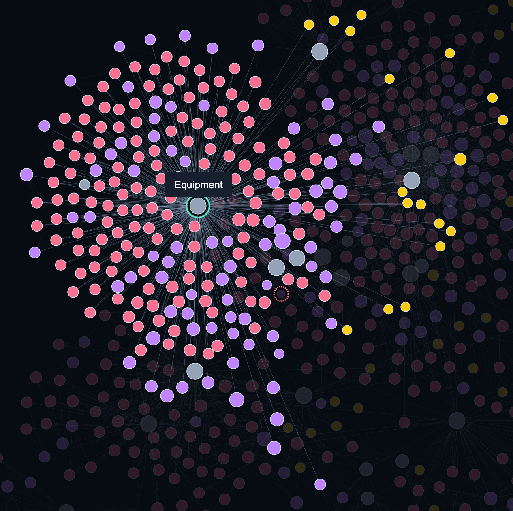
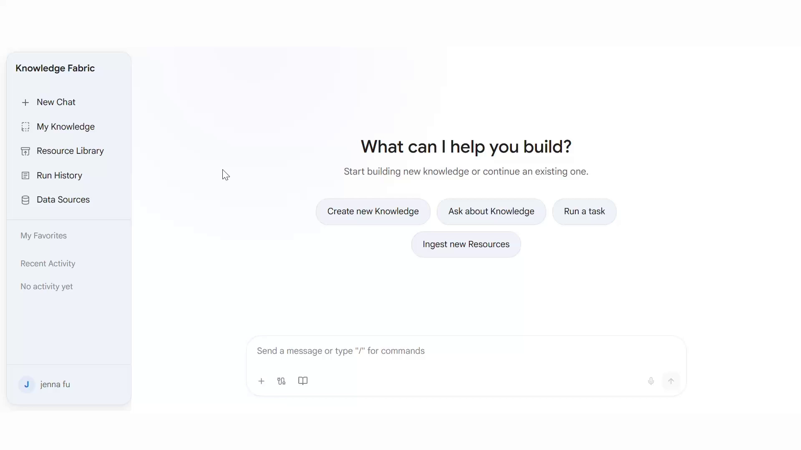
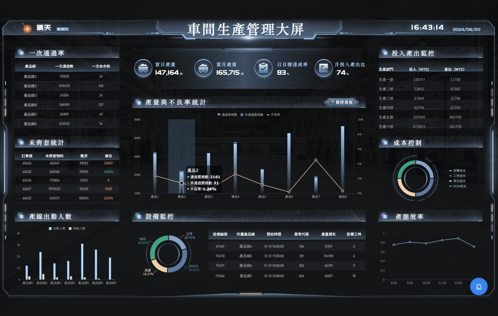
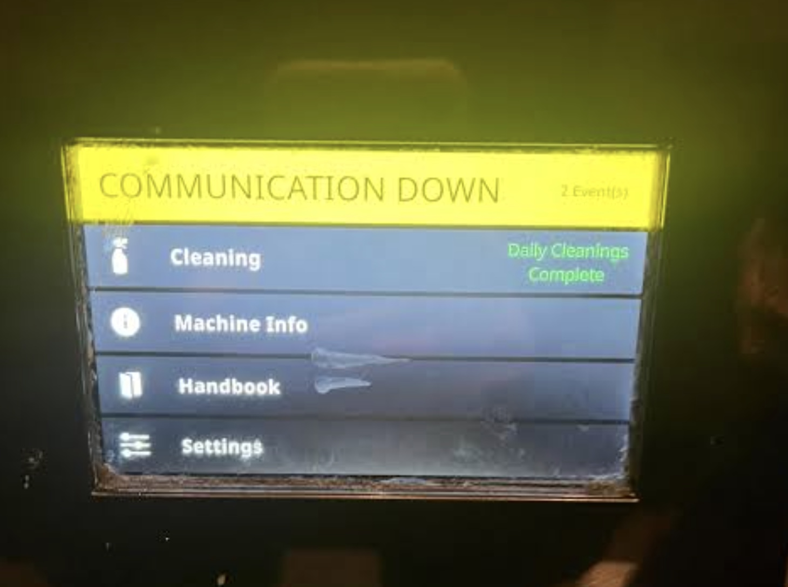
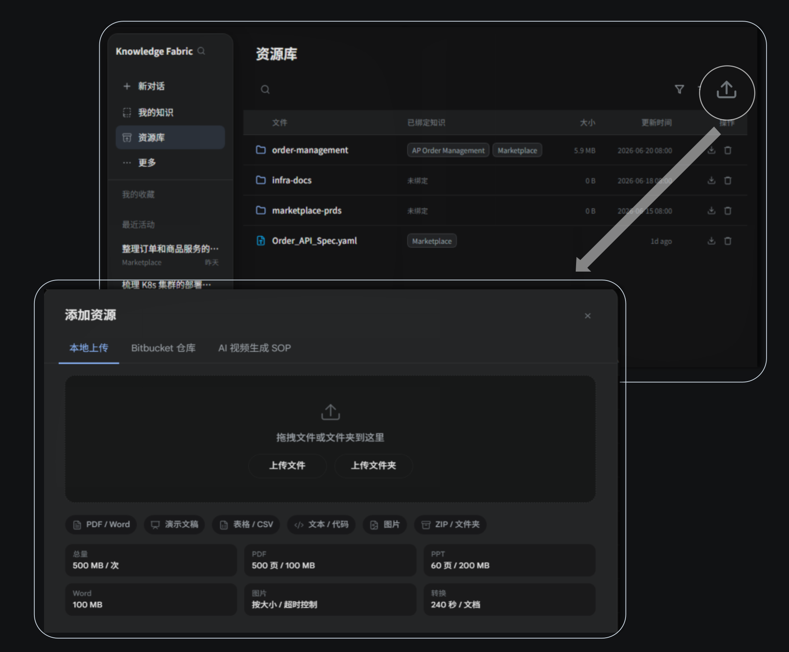

DOCX设备点检SOP_v12.docx
日常点检标准作业程序
AI Accelerator的业务价值实现探讨 · 主持人：TomExploring how AI Accelerator creates business value · Host: Tom
从九组实践与失败经验出发，辨认业务结果、流程断点、知识输入和必须保留的人类判断；不把演示流畅写成已上线结果。Start from nine practices and failures to identify outcomes, flow breakpoints, knowledge inputs and human judgement; a smooth demo is not a launch result.
让数据、语义、模型、Agent、Skill、页面与受控 Action 在同一条业务链上协同，明确权限、证据、回写和接管边界。Connect data, semantics, models, Agents, Skills, pages and controlled Actions in one business chain with explicit access, evidence, writeback and takeover boundaries.
Day 1 形成候选、风险和实施输入；Day 2 用真实业务与企业能力核验资产、组织和路线，最后确认继续、调整或停止的下一决策门。Day 1 forms candidates, risks and implementation inputs. Day 2 validates assets, organization and route with real business and enterprise capability, then confirms the next gate.
先建立合作语境，再从九案例由结果倒推：前/后流程 → 实施 → 组织证据 → ISS 对标 → 变更资产 → 重复交付；随后保留工具与风险讨论，形成可核验的实施输入。Set the partnership context, then use nine cases to move from outcomes to before/after flows, implementation, organizational evidence, ISS comparison, change assets and repeatable delivery; retain tool and risk discussions as implementation inputs.
| 顺序Order | 主题Topic | 时长Time | 本段输出与叙事Output and narrative |
|---|---|---|---|
| 1 | 公司与平台Company & platforms | 5 min | 三方定位、共同语言与四个决策字段开场。Roles, shared language and the four decision fields. |
| 2 | 九案例总览与七段展开Nine cases and seven-part deep dive | 240 min / 4 h | 九案例从结果→前/后流程→实施→组织证据→ISS对标→变更资产→重复交付；每例保留视频、证据与边界。Each case moves from outcome → before/after flow → implementation → organizational evidence → ISS comparison → change assets → repeatable delivery, with video, evidence and boundaries. |
| 3 | 平台框架、功能和工具Platform, functions and tools | 120 min / 2 h | 连接、复用、受控执行、回写、知识状态、运行观测与治理；工具存在不等于已授权或可上线。Connection, reuse, controlled execution, writeback, knowledge state, observability and governance; having a tool is not authorization or launch readiness. |
| 4 | 可能碰到的问题Risks and constraints | 60 min / 1 h | 准确性、Super Agent、SupplyX/Copilot边界、价值、AP复用、权限与审批；把风险变成证据和Owner。Accuracy, Super Agent, SupplyX/Copilot boundaries, value, AP reuse, access and approval; convert risks into evidence and Owners. |
| 5 | 针对 ISS 的实施ISS implementation | 60 min / 1 h | 用最佳实践、联合职责与七阶段形成候选、依赖、能力缺口和下一决策门；Day 2 再核验。Use best practice, joint roles and seven phases to form candidates, dependencies, capability gaps and the next gate; validate further on Day 2. |
| 合计（不含休息）Net total, excluding breaks | 485 min | 8 h 5 min | |
ITEM 的定位不是再造孤立工具，而是把业务场景、既有软件、领域知识、数据和算法接到可运行的页面、工作流、Agent 与业务 Action。ITEM connects business scenes, existing software, domain knowledge, data and algorithms to runnable pages, workflows, Agents and business Actions—not isolated tools.
面向 Citizen Business User、一线人员和业务使用者。For Citizen Business Users, frontline teams and business users.
面向 FDE、Senior User、Developer；DT 按需参与。For FDEs, Senior Users and Developers; DT joins when needed.
面向业务 Owner、专家、COO AI 与 ITEM 共建者。For business Owners, experts, COO AI and ITEM co-builders.
ITEM 直接与 COO AI Team 紧密合作、共同开发，依托 Hollis 已有的 AI、预测、优化与数字化成果扩展；ISS Biz 负责真实业务与价值验收，DT 按需加入。ITEM works directly and closely with the COO AI Team, extending Hollis’s existing AI, prediction, optimisation and digital results. ISS Biz owns real business value and acceptance; DT joins as needed.
| 字段Field | Day 1 初填 → Day 2 完整化Day 1 fill → Day 2 completion |
|---|---|
| ① 首个共建场景与验收指标First co-build scene & acceptance | 问题、用户、范围、排除项、基线与标准。Problem, users, scope, exclusions, baseline and criteria. |
| ② 联合团队与 OwnerJoint team & Owners | ISS Biz、COO AI、ITEM；FDE、专家、审批与按需支持。ISS Biz, COO AI, ITEM; FDE, experts, approvers and support as needed. |
| ③ 能力输入与执行边界Inputs & execution boundary | 数据、知识、代码、模型、接口、Tools、Skill、Action、权限、日志与评测；哪些真实执行、哪些模拟。Data, knowledge, code, models, interfaces, Tools, Skills, Actions, access, logs and evaluation; real versus simulated execution. |
| ④ 推进方式与下一决策门Delivery mode & next gate | 本轮阶段、交付物、责任、时间、上线条件，以及继续、调整或停止。Committed phase, deliverables, responsibility, timing, release conditions, and continue, adjust or stop. |
每例后续都有预录视频位置与七段展开；结果数字、效率或组织变化只在证据核验后记录，不在此页造数。Every case has a video slot and seven-part deep dive later. Numbers, efficiency and organizational change are recorded only after evidence checks.
从哪里开始：CSR ticket → 高频问题 → 候选后台能力。Where to start: CSR tickets → repeated issues → candidate background capability.
在既有代码和本地环境中生成、校验并受控发布页面。Generate, verify and release pages in the existing code and local environment.
让业务与开发共享语义，再连接分析页和业务表单。Create shared language for business and development, then connect analytics and forms.
规则、本体、样本与专家审核分开评测，准确性不外推。Evaluate rules, ontology, samples and expert review separately; do not extrapolate accuracy.
用视频降低线下流程表达门槛，形成经审核的 SOP 草案。Use video to lower the barrier for offline-process capture and draft a reviewed SOP.
经授权观察坐席流程，区分可自动、辅助和必须人工的动作。Observe agent flows with authorization and separate automatic, assisted and human-only actions.
SOP → Workflow → 自然语言变更，再经回归、发布与回滚。SOP → Workflow → natural-language change, followed by regression, release and rollback.
受控问答可单独验证；复杂经营决策不以演示代替业务合格。Controlled Q&A can be tested separately; complex operating decisions are not demo-qualified.
先补知识、权限和评测，再决定模型投资；必要时缩小、停止或转交。Stabilize knowledge, access and evaluation before model investment; narrow, stop or hand off when needed.
不要先假设“需要一个 Agent”：先把重复问题、交接和可验收结果说清楚，再选择可控切入点。Do not assume “we need an Agent” first: clarify repeated work, handoffs and acceptance before choosing a controlled entry point.
建议用一张真实流程图逐项确认系统边界、交接和状态真值。Use one real process map to verify system boundaries, handoffs and the source of truth.
建议录制：一组已脱敏 CSR ticket → 问题合并 → 一条运输任务的触发、交接、异常接管与回放。Suggested recording: redacted CSR tickets → issue merging → one transport task through trigger, handoff, exception takeover and replay.
请明确标注：真实 / 脱敏 / 模拟；不写假 src，不嵌外链播放器。Label clearly: real / redacted / simulated. No fake src and no external player.
无头 Agent 的价值在于事件驱动的后台协作；安全边界在于缺失、冲突、高风险和失败都能停下来并交给人。A headless Agent coordinates work from events in the background; safety comes from stopping and handing off on missing, conflicting, risky or failed cases.
从样本到小范围验证，再到采用与持续改进；以下困难是实施风险和建议机制，不是已发生的历史事实。Move from samples to narrow validation, then adoption and improvement. These are implementation risks and suggested mechanisms, not claimed historical facts.
本页只定义谁负责、如何验收和需要什么分母；没有实测数据就明确写“待补”，不把演示当成运营结果。Define ownership, acceptance and denominators first. Mark unmeasured data as “to collect”; a demo is not an operating result.
| 角色 | 职责 |
|---|---|
| Tom | 主持讨论、收口证据与决策门。 |
| ITEM | 直接对接 COO AI Team/Hollis，共同开发与交付。 |
| ISS Biz（team） | 业务流程、规则、专家审核、验收与采用。 |
| DT/IT/Security | 数据、代码、软件、接口、认证和基础设施，按需支撑。 |
| Role | Responsibility |
|---|---|
| Tom | Host the discussion, evidence close-out and decision gates. |
| ITEM | Direct interface to COO AI Team/Hollis; co-build and deliver. |
| ISS Biz (team) | Business process, rules, expert review, acceptance and adoption. |
| DT/IT/Security | Data, code, software, interfaces, certification and infrastructure as needed. |
案例给出方法骨架，不等于 ISS 已具备数据、接口、组织或评测；会中要把每个差距填到 Owner 和证据。The case provides a method skeleton, not proof that ISS has the data, interfaces, organisation or evaluation. Fill every gap with an Owner and evidence.
以上是案例事实，不是 ISS 实测成熟度。These are case facts, not measured ISS maturity.
可复用的是受控变更机制，不是把港口字段和规则未经验证地复制到第二个场景。Reuse the controlled change mechanism, not unverified port fields and rules copied into a second scene.
现场动手的目标是产出一份可审核的小范围草稿，而不是证明已有运营结果或把失败例隐藏起来。The hands-on goal is a reviewable narrow draft, not proof of operating results or a reason to hide failures.
成功与否都要留下证据，失败不是可删除的演示噪音。Success and failure both stay in evidence; failure is not demo noise to delete.
痛点不是“没有页面”，而是需求、字段、接口和状态在交接中反复丢失；演示必须落在既有 WMS 本地环境。The pain is not a missing page; handoffs lose requirements, fields, interfaces and states. The demo must run in the existing WMS local environment.
期望结果（建议）：可追溯登记、正确状态回写、可审核测试、可维护版本。Expected result (suggested): traceable registration, correct state write-back, reviewable tests and maintainable versions.
建议录制：需求描述 → 代码生成 → WMS 本地运行 → 业务修改 → 测试 → 状态回写。请标注真实环境、脱敏数据或模拟路径；不写假 src。Suggested recording: requirement → code generation → WMS local run → business change → tests → state write-back. Label real, redacted or simulated paths; no fake src.
待补：WMS 版本、源码/权限范围、本地环境位置、样例数据批准人、改造前基线。To add: WMS version, source/access scope, local environment, sample-data approver and baseline.
闭环的终点不是表单提交，而是有证据的业务状态变化；缺失信息和高风险 Action 必须停在人工确认门。The endpoint is not form submission, but an evidenced business-state change; missing data and high-risk Actions stop at human confirmation.
已知路径：需求→页面→本地验证。Known path: need → page → local validation.
最终结果（建议）：可追溯、一致、可回退；不是已实现收益。Final result (suggested): traceable, consistent and reversible; not a claimed realized benefit.
建议先做小范围、可复现的真实流程；困难要进入机制，未证实的阻力不能写成历史事实。Start with a narrow, reproducible real flow; turn difficulties into mechanisms, not unverified history.
困难可能包括源码/接口不可得、状态不可复现、权限遗漏、升级破坏契约；需逐项验证。Possible difficulties include unavailable source/interfaces, unreproducible states, access gaps and upgrade breaks; verify each one.
职责可以协作，但不能模糊；验收要同时覆盖业务、工程、接口、安全和维护边界。Responsibilities can be shared, but not blurred; acceptance covers business, engineering, interface, security and maintenance boundaries.
| 参与方Party | 责任Responsibility |
|---|---|
| ISS Biz (team) | 场景、规则、专家确认、业务验收与价值判断。Scenario, rules, expert review, business acceptance and value judgment. |
| COO AI Team | 直接对接 ITEM/Hollis，共同开发并依托现有成果。Direct ITEM/Hollis interface; co-build on existing results. |
| ITEM | FDE 协作、页面/流程工程、测试与交付。FDE collaboration, page/flow engineering, tests and delivery. |
| DT | 数据、代码、软件、接口、跨部门支撑，按需进入。Data, code, software, interfaces and cross-functional support as needed. |
待补实测结果：当前没有可引用的上述 KPI；不得写成已实现。Measured results to add: no citable KPI exists here; do not present one as achieved.
对标不是宣布已有能力，而是把软件、知识、数据、接口和组织的缺口变成会中可回答的问题。Benchmarking does not declare capability; it turns software, knowledge, data, interface and organisation gaps into answerable questions.
| 维度Dimension | 先确认什么First confirm |
|---|---|
| 软件/源码Software/source | 版本、源码、组件和权限范围Version, source, components and access scope |
| 知识/字段Knowledge/fields | 对象、状态、字段字典、专家解释Objects, states, field dictionary and expert meaning |
| 数据/接口Data/interfaces | 脱敏样例、状态更新、审计、回滚Redacted samples, state update, audit and rollback |
| 组织/工程Org/engineering | Owner、审核、发布、维护、DT 进入条件Owner, review, release, maintenance and DT entry |
现场确认：Owner 由会中指定；版本/环境由会中记录；证据位置由会中登记。Confirm live: assign the Owner in the room; record the version/environment; register the evidence location.
动态表单不是一次性生成物；真正可迁移的是授权、审核、回归、发布与维护的共同语言。A dynamic form is not a one-off artifact; the reusable asset is shared language for access, review, regression, release and maintenance.
每一步保存版本、责任、证据和未决项。Keep version, owner, evidence and open items at every step.
现场不追求强行产品化；要产出能力卡、映射、用例和责任，并保留失败时的缩小、停止与转交机制。The room need not force productisation; it should produce a capability card, mappings, tests and owners, with stop, narrow and handoff paths.
待补：实际修改内容、参与人、测试结果、目标环境、维护 Owner。To add: actual change, participants, test result, target environment and maintenance Owner.
业务说费率、报价与运输条件；开发看到系统、表格与字段。第一步不是宣称收益，而是对齐语义、交接与授权边界。Business speaks in rates, quotes and transport conditions; development sees systems, tables and fields. First align semantics, handoffs and access—not claimed benefits.
客户、服务、运输、费率、报价、条件。Customer, service, transport, rate, quote, conditions.
不同系统、表格、状态和计算实现。Different systems, tables, states and calculations.
具体系统、交接人、审批节点、耗时和失败点：待 ISS Biz (team) 补证。Specific systems, handoffs, approval nodes, effort and failure points: ISS Biz (team) to provide.
建议录：真实数据（已授权）→候选→专家审核→页面→表单→规则同步→人工接管。请标注真实 / 脱敏 / 模拟。Record: authorised data → candidates → expert review → page → form → rule sync → human handoff. Label real / redacted / simulated.
正常任务可走页面与表单；缺失信息、规则冲突和异常报价必须显式停下并交给人。Normal work can use the page and form; missing data, rule conflicts and abnormal quotes must stop visibly and go to a person.
先锁定边界和证据，再建设页面与表单；未知阻力标成可能困难，不写成历史事实。Lock scope and evidence before building pages and forms; possible difficulties are hypotheses, not historical facts.
字段缺少业务语义、来源口径不一致、例外未覆盖、页面与表单定义分叉、权限或接口不清晰。Missing business meaning, inconsistent sources, uncovered exceptions, diverging page/form definitions, unclear access or interfaces.
建议机制：候选/确认分层、异常集、版本溯源、规则回归、正式报价权限门。Suggested controls: candidate/confirmed layers, exception set, version trace, rule regression and formal-quote gate.
组织分工是建议设计；验收要有分母、周期、错误级别和可回放证据。当前没有已实现运营结果。Roles are a proposed design; acceptance needs denominators, periods, error levels and replayable evidence. No achieved operating result is available here.
| 参与方Party | 职责Role |
|---|---|
| ISS Biz (team) | 场景、规则、数据定义、专家确认、验收与价值验证。Scenario, rules, data definition, expert review, acceptance and value. |
| ITEM | 与 COO AI Team/Hollis 紧密共同开发；实现页面、表单、测试和交付。Co-build closely with COO AI Team/Hollis; implement pages, forms, tests and delivery. |
| COO AI Team / DT | 已有成果与方法支撑；数据、代码、软件、接口等按需支撑。Existing results and method support; data, code, software and interfaces as needed. |
审批、运营维护和正式报价 Owner：待确认。Approval, operations and formal-quote Owner: to be confirmed.
待补证据Evidence needed
样本量、基线、各类错误数、人工时长/成本、接管率、回滚次数、正式报价通过/退回情况。Sample size, baseline, error counts, effort/cost, takeover rate, rollbacks and formal-quote approvals/returns.
已知现状是业务与开发围绕报价、费率和条件反复沟通；其余系统、权限、接口与运营事实需在会中填写。Known today: business and development repeatedly align on rates, quotes and conditions. Systems, access, interfaces and operations must be filled in live.
相关材料边界Material boundary
PEI、UKM 是后续候选；BNP → 动态表单 → PEI 仅作补充材料，不与本次 UNIS 项目混同。PEI and UKM are later candidates; BNP → dynamic form → PEI is supplementary, not the same UNIS project.
把业务知识沉淀为可授权、可审核、可回放的资产；第二场景复用机制，不复用未经验证的语义。Turn business knowledge into authorised, reviewable and replayable assets; reuse mechanisms, not unverified semantics.
具体工具、系统和知识库位置：待补。Specific tools, systems and knowledge-base location: pending.
通用方法可以复用，业务语义必须重验证；动手目标是小范围草稿，不是宣称上线或正式报价成功。The method can repeat, but business semantics must be re-validated. The hands-on output is a bounded draft, not a production or formal-quote claim.
通用核心：审核、版本、溯源、异常分流、权限门、评测与维护。Common core: review, versioning, traceability, exception routing, access gates, evaluation and maintenance.
先锁定一条可验收的 BO / Customer Promise 链，再把规则、交接和证据放进同一个闭环。Start with one testable BO / Customer Promise chain, then connect rules, handoffs, and evidence in one loop.
改造前待核实：查WIKI → 跨系统核对 → 专家判断 → 客户承诺 → 人工回写。标出重复查询、交接与延迟。Before, to verify: WIKI lookup → cross-system checks → expert judgment → customer promise → manual write-back. Identify repeated checks and handoffs.
范围建议：先选择有限业务线、地区、料件与服务承诺组合；不把全组织覆盖写成已完成。Scope: choose limited lines, regions, parts and promises; enterprise-wide coverage is not claimed.
建议录制：一条 BO / Customer Promise 链，从 WIKI 规则、跨系统查询、ETA/风险判断到专家确认与状态回写。Suggested recording: one BO / Customer Promise chain, from a WIKI rule and cross-system query through ETA/risk review, expert confirmation, and status write-back.
请区分：真实业务、脱敏演示、模拟流程；本槽位不含 src，不代表已有结果。Label it as real, anonymized, or simulated; this slot has no src and does not imply an achieved result.
建议把“可回答”与“可执行”拆开：先给出可追溯判断，再按风险和权限决定是否放行。Separate “answerable” from “executable”: give a traceable judgment first, then gate action by risk and authority.
按版本、样本、专家审核和独立评测推进；困难先作为风险管理，不把未证实阻力写成历史事实。Work through versions, samples, expert review, and independent evaluation; treat unverified obstacles as risks, not history.
采用建议：现场演示一条可追踪链，让专家先改一个规则或边界样本，再形成责任人和回归项。Adoption suggestion: demo one traceable chain; let an expert change one rule or boundary sample, then assign an owner and regression item.
职责可以先建议，结果必须后验收；回答、规则判断、ETA、建议与 Action 分开报告。Responsibilities can be proposed; results must be evidenced. Report answers, rule judgments, ETA, recommendations, and Actions separately.
待补：正确案例数/有效评测案例数、周期、基线、成本、人工介入与错误等级。To fill: correct/valid cases, period, baseline, cost, human intervention, and error levels.
已知方法主线是 WIKI → 小本体 → 样本＋专家审核 → 评测 → 泛化；现状、接口和运营数据仍需现场确认。The known method is WIKI → small ontology → samples plus expert review → evaluation → generalization; current gaps need live confirmation.
| 现状Current | 规则分散于 WIKI、专家判断与跨系统查询；具体节点、周期未知。Rules span WIKI, expert judgment, and cross-system queries; nodes and cycle time unknown. |
|---|---|
| 最好实践Best practice | 小范围本体与独立评测，错误返回知识/规则/样本/本体。Small-scope ontology and independent evaluation; route errors back to knowledge/rules/samples/ontology. |
| 知识/数据Knowledge/data | 必要概念已列；字段、版本、来源与样本分布未知。Core concepts are listed; fields, versions, sources, and sample mix unknown. |
| 接口/组织Interfaces/org | 需要按权限查询并回写；实际系统、Owner、审批链未知。Permissioned query and write-back are needed; systems, owners, and approval chain unknown. |
复用的是治理与交付方法，不是把一个小本体的结果直接外推到全部 BO。Reuse the delivery and governance method, not the result of one small ontology across all BO.
现场不追求一次产品化；完成一个小范围、可审计、可回滚的草稿，并明确下一步责任。Do not force productization today; produce a small, auditable, reversible draft with clear ownership.
动作建议：用授权材料修改一个规则或流程；例如把“ETA 缺失”例外加入样本，写出人工接管、验收项、责任人和回滚点。Suggested action: modify one authorized rule or flow; for example, add an “ETA missing” exception with handover, acceptance, owner, and rollback point.
产出：小范围草稿＋能力卡＋验收表＋责任矩阵；记录版本、专家确认与评测影响。Output: small-scope draft, capability card, acceptance sheet, responsibility matrix; record version, expert approval, and evaluation impact.
失败机制：本体失效、字段不可得、独立评测不通过或高风险错误未关闭 → 缩小范围、暂停自动 Action、转 ISS Biz 专家/人工队列。Failure mechanism: ontology failure, unavailable fields, failed evaluation, or open high-risk errors → narrow scope, pause automatic Actions, and hand over to ISS Biz experts/humans.
先把真实操作变成可审核的 SOP 草稿，再决定哪些步骤适合 Agent、Tool 或 Workflow；不是先假设自动化已经成功。Turn demonstrated work into a reviewable SOP draft before deciding what belongs in an Agent, Tool, or Workflow. Do not assume automation success.
页面切换、口头判断、手工步骤和未记录经验难以仅靠访谈还原。候选适用流程包括 backlog、物流数据、线下资料与跨系统操作。Screen changes, verbal judgement, manual steps, and tacit experience are easy to miss in interviews. Candidate flows include backlog, logistics data, offline materials, and cross-system work.
输出步骤、输入、判断、系统切换、例外、结果和不确定性；由实际操作人员及 ISS Biz (team) 业务 Owner 审核。耗时、遗漏、修正量和维护成本待实测。Output steps, inputs, decisions, system changes, exceptions, results, and uncertainty. The operator and ISS Biz (team) Owner review it. Time, omissions, corrections, and maintenance cost are unmeasured.
从视频到 SOP，再到受控执行；任何证据不足、权限不明或不可逆动作都触发人工确认。From video to SOP to controlled execution; insufficient evidence, unclear permission, or irreversible actions trigger human confirmation.
实施重点是可复现、可审核和可停止；输入没有证明的阻力只作为待验证假设。Implementation should be reproducible, reviewable, and stoppable. Unproven resistance remains a hypothesis to validate.
职责模型是建议，不是已完成的组织转型；目前没有任何实测 KPI 或运营结果。The role model is proposed, not a completed organizational transformation; no measured KPI or operating result is provided.
| 维度Dimension | 固定口径Fixed definition | 现值Current value |
|---|---|---|
| 知识质量Knowledge quality | 漏项、误解、专家修正量Omissions, misunderstandings, expert corrections | 待补Pending |
| 流程质量Process quality | 完成、阻断、回滚；正常/异常样本分母Complete, blocked, rollback; normal/exception denominator | 待补Pending |
| 运行与业务Run and business | 人工时长、失败原因、错误严重度、最终结果Manual time, failure reason, severity, final result | 待补，不能写提升Pending; no uplift claim |
还需固定：样本量、观察周期、成本口径、维护周期、敏感数据事件口径。Also fix sample size, observation period, cost definition, maintenance cycle, and sensitive-data incident definition.
输入没有说明 ISS 现有最好实践；本页把未知项变成会中可验证的问题和证据位置。The input does not identify an existing ISS best practice; this page turns unknowns into verifiable questions and evidence slots.
样本：Sample: 哪个流程首选？系统与 Owner 是谁？【待填】Which flow is first? Which system and Owner? [Fill in]
演示：Demo: 谁提供、谁审核、谁替代？【待填】Who provides, reviews, and substitutes? [Fill in]
数据：Data: 真实/脱敏/模拟、分级、审批人？【待填】Real/de-identified/simulated, classification, approver? [Fill in]
接管：Takeover: 什么情况暂停？谁处理？【待填】What pauses the run? Who handles it? [Fill in]
证据：Evidence: 基线、分母、周期、错误级别、链接？【待填】Baseline, denominator, period, severity, link? [Fill in]
业务规则由业务提出，专家审核，FDE 改造，回归后再发布；知识资产必须带授权与审核记录。Business proposes rules, experts review, FDE changes, regression follows, then release. Knowledge assets need authorization and review records.
业务提出规则/流程变更Business proposes rule/process change
记录提出人、范围、原因Record proposer, scope, and reason
专家与实际操作人员审核Expert and operator review
确认例外、权限、接管边界Confirm exceptions, permissions, takeover
ITEM / COO AI Team/Hollis 开发，DT 按需支撑ITEM / COO AI Team/Hollis build; DT supports as needed
保留版本与影响范围Keep version and impact scope
正常/异常回归 → ISS Biz (team) 验收 → 发布/回滚Normal/exception regression → ISS Biz (team) acceptance → release/rollback
监控失败、修正和停止条件Monitor failures, corrections, stop conditions
采集模板、证据结构、缺失信息问法、接管协议、版本/回滚字段、沙盒回归、验收与运营复盘。Capture template, evidence structure, missing-info questions, takeover protocol, version/rollback fields, sandbox regression, acceptance, and operations review.
新场景的授权、敏感数据、接口、字段语义、业务规则、异常分布、权限和最终结果定义。New scenario authorization, sensitive data, interfaces, field semantics, business rules, exception distribution, permissions, and final-result definition.
能录屏不等于 Agent 能直接迁移；原始视频也不等于应长期保存。Recordability does not imply direct Agent transfer; raw video does not imply long-term retention.
把方法拆成核心、配置、接口、评测和维护；现场只修改一个低风险规则或流程分支。Separate the method into core, configuration, interfaces, evaluation, and maintenance. Modify one low-risk rule or branch live.
选择低风险、可脱敏或模拟步骤，修改一条规则或流程分支，并保留修改前后版本。Choose a low-risk, de-identifiable or simulated step; modify one rule or branch and retain before/after versions.
先看坐席如何跨知识、订单、服务和沟通系统工作，再决定哪些步骤可自动、需辅助或必须由人决定。Observe how agents work across knowledge, order, service and communication systems before deciding what can be automated, assisted or kept human-led.
建议录制：一个坐席任务、跨系统切换、判断分支、标准回复/信息补充、升级点和最终状态。Record: one agent task, system switches, decision branches, standard reply/information capture, escalation and final status.
请区分真实／脱敏／模拟，并标出与实际接口、权限和规则的差异。Label real / redacted / simulated, including differences from live interfaces, access and rules.
建议把每个动作放进同一条可追溯链：输入、知识、动作、接管、状态回写和最终业务结果。Put every Action on one traceable chain: input, knowledge, Action, takeover, status write-back and final business result.
识别任务、必要字段和相关知识；范围需经授权。Identify task, required fields and knowledge within authorised scope.
SOP → UKM / Ontology / Skill → Connector/Tools；标准后台动作按权限执行。SOP → UKM / Ontology / Skill → Connector/Tools; run standard back-office Actions only within access.
提示缺失字段并请求补充；未满足前不执行完整性要求高的动作。Prompt for missing fields; do not run Actions requiring complete data until satisfied.
冲突、接口失败、敏感沟通或高风险动作转人工；坐席可修正。Conflicts, failures, sensitive communication or high-risk Actions go to an agent for correction.
记录调用、权限、接管、修正与最终结果；字段待确认。Log calls, access, takeover, corrections and final result; fields to confirm.
以业务系统可核验状态验收；没有已证实收益数字。Accept against a verifiable business-system state; no proven benefit figures yet.
先把真实流程转成可审核SOP，再逐步开放知识、建议和允许的后台动作；未证实的阻力只作为可能困难。Turn real work into an auditable SOP first, then open knowledge, suggestions and permitted back-office Actions step by step; unverified resistance remains a possibility.
建设顺序建议：观察标注 → 专家审核 → UKM/Ontology/Skill → Connector/Tools → 小范围回归 → 受控发布。Suggested order: observe and annotate → expert review → UKM/Ontology/Skill → Connector/Tools → small regression → controlled release.
不虚构KPI；先把责任、基线、分母、周期、错误级别和最终结果定义清楚，再收集实测证据。Do not invent KPIs. Define owners, baseline, denominator, period, error severity and final outcome before collecting measurements.
待补实测：任务量、周期、基线数值、结果、接管率、接口成功/失败、修正量、上线/停止日期。Missing measurements: volume, period, baseline values, outcomes, takeover, interface success/failure, corrections and go/stop date.
已有基础是“授权观察→SOP→UKM/Ontology/Skill→Connector/Tools”；最佳实践和实际Owner需要在会中逐项确认。The known path is authorised observation → SOP → UKM/Ontology/Skill → Connector/Tools; best practice and actual Owners must be confirmed item by item.
规则和接口变更不直接改线上行为；通过专家审核、FDE修改、回归和发布/回滚形成责任链。Do not change live behaviour directly; use expert review, FDE change, regression and release/rollback to create an accountable chain.
每次变更建议绑定规则版本、适用范围、审批人、回归样本、错误级别、发布窗口和回滚条件。Bind every change to rule version, scope, approver, regression samples, severity, release window and rollback condition.
把观察、审核、动作控制和运营交付做成方法包；证据不足时缩小、暂停或转交，不强行产品化。Package observation, review, Action control and operations; when evidence is weak, narrow, pause or hand over instead of forcing productisation.
通用核心：Core: 授权、标注、审核、分级、日志、回归、责任矩阵。consent, annotation, review, classification, logs, regression and RACI.
场景配置：Config: CEC术语、Genesys动作/字段/权限、回复和升级规则。CEC terms, Genesys Actions/fields/access, replies and escalation rules.
失败机制：Failure mechanism: 不满足授权、质量、安全或接口门槛时，缩小范围、停止或转人工；不能强行产品化。If consent, quality, safety or interface gates fail, narrow, stop or hand over; do not force productisation.
已知痛点是流程小而杂、变化快；本页只提出一个可核验的首个切片，不假定系统已集成。The known pain is fragmented, fast-changing work. Start with one testable slice; do not assume integration.
建议录制：SOP 到运行 Workflow、一次异常接管、一次状态回写或回滚。Suggested recording: SOP to running workflow, one exception handoff, and one write-back or rollback.
请标注：真实 / 脱敏 / 模拟；视频观察不能自动等同于维修质量证明。Label as: real / de-identified / simulated; video observation is not proof of repair quality.
待补证据：正式名称、流程范围、系统归属、首个切片、现状样本与基线。Missing evidence: formal names, scope, system ownership, first slice, current sample and baseline.
建议闭环：SOP → Workflow → 自然语言调整 → 验证与受控发布 → 运行反馈。Suggested loop: SOP → workflow → natural-language change → verified release → runtime feedback.
输入必须可追溯；困难先作为验证项，不把未证实阻力写成历史事实。Inputs must be traceable. Treat difficulties as validation items, not as unverified history.
以下是建议的职责与证据框架，不代表已发生组织转型或已有实测收益。The roles and evidence below are proposed; they do not claim an organizational transformation or measured gains.
角色变化需后续正式确认，不预设组织改造。Any role change needs formal confirmation; no reorganization is assumed.
| 维度Dimension | 定义与分母Definition and denominator |
|---|---|
| 基线Baseline | 流程实例、变更、异常、接管；观察周期与纳入/排除规则。Instances, changes, exceptions, handoffs; window and inclusion rules. |
| 质量Quality | 完成、证据、回写、返工、未经授权动作、回滚。Completion, evidence, write-back, rework, unauthorized actions, rollbacks. |
| 效率/成本Efficiency/cost | 需求到可运行时间、修改周期、等待、审查工时、运行成本。Time to runnable flow, change cycle, wait, review hours, runtime cost. |
| 错误级别Error levels | 格式、逻辑、回写、权限越界、安全/合规；定义升级与停止。Format, logic, write-back, permission, safety/compliance; escalation and stop. |
待补：Owner/专家/运营确认、样本量、实测值、验收记录。Missing: owner/expert/operations confirmation, sample, measurements and acceptance record.
已知只有痛点；最佳实践、知识、数据、接口和 Owner 均待 ISS Biz 确认。Only the pain point is known. Best practice, knowledge, data, interfaces and owners need ISS Biz confirmation.
| 维度Dimension | 当前证据/差距Evidence/gap | 会中填写Fill in |
|---|---|---|
| 现状流程Current flow | 范围未定Scope not set | 待填写To fill |
| 最好实践Best practice | 无本案例证据No case evidence | 待填写To fill |
| 知识Knowledge | SOP/异常/术语待收集SOP/exceptions/terms pending | 待填写To fill |
| 数据/接口Data/interfaces | 状态、历史任务、读写未知States, history, read/write unknown | 待填写To fill |
| 组织/运营Org/operations | Owner、升级、评测待建Owner, escalation, evaluation pending | 待填写To fill |
把每次业务变更变成可审核、可回归、可发布或回滚的链。Turn every business change into a chain that can be reviewed, regressed, released or rolled back.
目标是产出草稿、能力卡、验收与责任，不因演示通过就强行产品化。Leave with a draft, capability card, acceptance and owners—not forced productization after a demo.
带一条已授权 SOP、一个脱敏样本和一个要修改的规则；产出 Workflow 草稿、差异、回归用例、回滚点、能力卡、验收标准和责任分配。通用核心是版本化、权限/人工接管、接口确认、回归/回滚、证据台账与维护。Bring one authorized SOP, one de-identified sample and one rule; produce the draft, diff, regression cases, rollback point, capability card, acceptance and owners. Reusable core: versioning, permissions/handoff, interface confirmation, regression/rollback, evidence ledger and maintenance.
术语、权限、接口、状态或证据不明，保持只读/模拟；异常无法安全接管或视频边界未明，停止自动动作并转交 ISS Biz/专家，不能强行产品化。If terms, permissions, interfaces, states or evidence are unclear, stay read-only/simulated; if handoff or video boundaries are unsafe, stop automation and escalate to ISS Biz/expert. Do not force productization.
已知：受控问答可行；当前复杂决策未达业务门槛。建议本轮先验证可追溯问答，不交付自动经营决策。Known: controlled Q&A is viable; complex decisions are below the business bar. Proposed: validate traceable Q&A first, not automated operating decisions.
建议录制：同一请求分别走 Q&A、证据不足拒答、复杂决策转人工；标注“真实／脱敏／模拟”。Record: one request through Q&A, evidence-insufficient refusal and decision hand-off; label “real / anonymized / simulated”.
此处仅为有意义的预留位，不含假 src 或外链。Meaningful reserved slot only; no fake src or external iframe.
建议把可验证的问答闭环先做实；复杂决策遇到缺证据或高风险时必须停下并交给人。Proposed: make the verifiable Q&A loop real first; stop and hand off complex decisions when evidence is missing or risk is high.
已知困难是决策维度多、背景动态、样本少；以下建设与采用路径均为建议，不是已完成运营结果。Known difficulties are many dimensions, dynamic context and sparse samples; the build and adoption path below is proposed, not a completed operating result.
角色安排依据契约；实测质量、成本、收益和组织变化均未提供，页面只给出建议口径与待补证据。Roles follow the contract; measured quality, cost, benefit and organizational change are not provided. This page gives proposed measures and missing evidence only.
未提供准确率、拒答率、转交率、响应时长、成本、用户数、采用率、业务收益或错误数。不得虚构 KPI、排名、Top10/Top6 名单或模型能力。
No accuracy, refusal, hand-off, latency, cost, user, adoption, benefit or error data was provided. Do not invent KPIs, rankings, Top10/Top6 lists or model capability.
已知边界是 Q&A 可行、复杂决策不准；ISS 的入口、数据、接口和运营现状未在输入中提供，不能虚构成熟度或排名。Known boundary: Q&A is viable, complex decisions are unreliable. ISS entry points, data, interfaces and operations were not provided; do not invent maturity or rankings.
首个任务：待补 Owner：待补 周期：待补
知识来源／更新／敏感级别：待补
接管点／回写系统／真实脱敏样本数：待补
First task: to be confirmed Owner: to be confirmed Period: to be confirmed
Knowledge source / freshness / sensitivity: to be confirmed
Hand-off / write-back / real anonymized samples: to be confirmed
复用的是边界、审核、评测和回滚机制；每个新场景仍需重新验证目标、授权、样本与风险。Reuse boundaries, review, evaluation and rollback; every new scenario still revalidates goals, authorization, samples and risk.
业务提规则 → 专家审核 → FDE 改 → 回归 → ISS Biz (team) 验收 → 发布 → 监测 → 回滚／停止
Business proposes rule → expert review → FDE changes → regression → ISS Biz (team) accepts → release → monitor → rollback / stop
每个节点保留版本、责任人、证据和批准记录。
Keep version, owner, evidence and approval at every node.
失败例也可以复用方法，但不能强行产品化。现场只做一个可审计的小范围草稿，无法验收就停止或转交。A failure case can reuse method, but must not be forced into a product. Draft one auditable small-scope card; stop or hand off if it cannot be accepted.
若没有责任授权、真实样本或可验证目标，产出停止／转交草稿，不强行产品化；需要完整经营背景或稀缺数据的任务交给相应团队。
Without accountability, real samples or a testable goal, produce a stop/hand-off draft rather than force productization. Hand off tasks needing full operating context or scarce data.
待补：规则版本、样本、验收签字与回滚确认。
Missing: rule version, samples, acceptance sign-off and rollback confirmation.
平台识别不同文件中的有效信息，过滤重复与噪音，并将结果组织为结构化知识The platform identifies useful information across files, filters duplication and noise, and organizes the result as structured knowledge.


42:18
def inspect_device(asset): status = read_sensor(asset) if status != "ready": create_work_order(asset)

左右拖动分界线，比较高噪声资料与抽取后的结构化知识。也可使用键盘方向键。Move the divider to compare noisy sources with structured knowledge. Arrow keys are also supported.
集中收集不同渠道的资料，为知识整理提供完整、可追溯的依据Bring materials from different channels into one place so knowledge work starts from complete, traceable evidence.
文件、文件夹与常用办公文档Files, folders and common office documents
拉取 Bitbucket 仓库与指定分支Connect a Bitbucket repository and selected branch
图片、CSV、JSON、YAML 等资料Images, CSV, JSON, YAML and related files
从真实操作中提取标准操作流程Extract standard operating procedures from real work
多维来源统一管理，对应知识一一关联One entry point manages sources, versions and their links to knowledge.

分析资料并生成草稿，用户确认后形成结构化 OntologyKnowledge Fabric analyzes the selected materials and generates a draft. User confirmation turns it into a structured Ontology.
用自然语言描述需要整理的业务知识Describe the business knowledge to organize in natural language
引用资源库中的文件、代码或视频Reference files, code or video from the resource library
检查系统生成的草稿，确认即可继续Check the generated draft and confirm it to continue
形成可追溯、可持续维护的 OntologyCreate a traceable Ontology that can be maintained over time
把“模型训练”从默认起点改成有证据才进入的选项，并把失败样例保留在回归循环里。Make model training an evidence-based option, not the default starting point; keep failures in the regression loop.
当前没有实测 KPI；本页把需要共同确认的职责和证据字段摆出来，避免把建议写成结果。No measured KPI is provided. This page surfaces owners and evidence fields to prevent proposals being mistaken for results.
| 证据栏Evidence | 会中填写Fill in |
|---|---|
| 业务任务与分母Task / denominator | 任务数、样本期、角色、场景Count, sample period, role, scenario |
| 质量基线Quality baseline | 来源、事实、拒答、转人工Sources, facts, rejection, takeover |
| 风险基线Risk baseline | 权限、个人信息、员工权益、决策责任Access, data, rights, decisions |
| 成本与归因Cost / attribution | 推理、维护、评测、迁移、错误 OwnerInference, maintenance, evaluation, migration, owner |
不得虚构 KPI、运营结果、组织转型、排名或模型能力。
Do not invent KPI, operating results, organizational transformation, rankings, or model capability.
已知的是五类坑与修正方向；未知的是具体 ISS 场景、系统、数据、接口、审批、Owner 与实测结果。Known: five pitfalls and fixes. Unknown: the concrete ISS scenario, systems, data, interfaces, approvals, owners, and measured results.
1. 选一个真实 CSR 问答：输入、知识、权限、输出、接管点是什么？
1. Pick one real CSR question: input, knowledge, access, output, takeover?
2. 哪条 HR 规则已有 HR、法务、安全与业务 Owner 边界确认？
2. Which HR rule has boundaries confirmed by HR, legal, security, and owner?
3. 最近一次幻觉或错误系统状态是什么？能提供脱敏样例与影响等级吗？
3. What was the latest hallucination or wrong state? Can we share a de-identified sample and severity?
4. 现有模型、检索和规则基线是什么？自建模型的明确缺口能否用样例证明？
4. What is the baseline for model, retrieval, and rules? Can samples prove the custom-model gap?
5. 谁审核、发布、回滚、接异常？周期和分母是多少？
5. Who reviews, releases, rolls back, and handles exceptions? What period and denominator?
可沉淀的是证据字段、流程与治理机制；不可直接外推的是具体规则、样本、接口和错误代价。Evidence fields, workflows, and governance can be reused; specific rules, samples, interfaces, and error costs must be revalidated.
业务提规则
↓
专家审核
↓
FDE 改规则 / 检索 / 工具
↓
回归与 ISS Biz 验收
↓
发布 / 回滚
↓
运营回填知识与评测Business proposes rule
↓
Experts review
↓
FDE changes rules / retrieval / tools
↓
Regression and ISS Biz acceptance
↓
Release / rollback
↓
Operations update knowledge and evaluation
这是建议机制，不表示当前已完整实现。
This is proposed governance, not proof of current implementation.
交付的最小单元不是“一个模型”，而是一套可验收、可接管、可维护、可停止的任务方法。The minimum delivery unit is not a model; it is a testable, operable, maintainable, stoppable task method.
现场修改一个真实但可脱敏的规则或流程：
Modify one real but de-identifiable rule or workflow:
待补：真实规则、脱敏材料、审核人、实现人、样本、责任表、回滚条件、复测日期。
Pending: real rule, de-identified material, reviewers, implementers, samples, owners, rollback, retest date.
统一身份、任务、结果和异常处理；现有 WMS、Genesys、ISS 仍可作为业务工作面。Unify identity, tasks, results and exceptions while WMS, Genesys and ISS remain business work surfaces.
建议、调用成功和业务执行成功必须分开记录；未经审核的推断不能覆盖正式事实。Separate recommendation, call success and business execution success; unreviewed inference must not overwrite facts.
工具返回不等于业务完成；权限、审批、幂等、重试和冲突必须成为运行条件。A tool response is not business completion; permissions, approval, idempotency, retries and conflicts are runtime conditions.
互联不是完整，也不等于可训练；每个输入都要保留来源、时间、版本、权限和质量。Connected does not mean complete or trainable; every input keeps source, time, version, access and quality.
Hollis 框架支持能力对齐；材料中的方向不等于本轮已接入、已授权或已达标。The Hollis framework supports capability alignment; listed directions are not necessarily connected, authorized or qualified here.
表达结构、变化、约束与依赖；可涉及时序、图网络、生命周期和拓扑。Represent structure, change, constraints and dependencies through temporal, graph, lifecycle and topology views.
预测需求、ETA、风险或故障并解释原因；如 Le-TSFM 等方向需能力对齐。Predict demand, ETA, risk or failure with explanations; directions such as Le-TSFM need capability alignment.
在规则和约束下比较方案；如 Le-OPT 等方向需确认接口、成熟度与授权。Compare feasible options under rules and constraints; directions such as Le-OPT need interface, maturity and access checks.
连接、封装和复用必须有权限、质量、版本与 Owner；Marketplace 是技术能力层，不是业务商城。Connection, encapsulation and reuse need access, quality, version and ownership; the Marketplace is technical, not a business store.
连接授权系统与上下文，明确接口和失败处理。Connect authorized systems and context with explicit interfaces and failure handling.
封装查询与 Action，定义输入、输出、权限和审计。Encapsulate queries and Actions with input, output, access and audit defined.
表达可重复能力及业务责任，支持测试和版本化。Express repeatable capability and business ownership for testing and versioning.
登记、发现、复用和治理技术能力，不以入驻数量替代价值。Register, discover, reuse and govern technical capability; listings do not equal value.
Dashboard 面向人，回答业务得到什么；路由和内部计量用于比较能力与单位成本，不承诺价格。The Dashboard serves people and business outcomes; routing and internal metering compare capability and unit cost without price promises.
让业务人员用标准入口表达目标；重复任务可后台运行，但必须保留异常接管。Let business users express goals through standard entry points; repetitive work may run in background with exception takeover.
Factory 连接建设与治理：草案、能力接入、权限、沙盒、版本、发布和内部日志。The Factory links build and governance: drafts, capability access, permissions, sandbox, versions, release and internal logs.
一次演示成功只是起点；资格认定要覆盖规则、异常、权限、Action、成本、接管和版本日志。One successful demo is only a start; qualification covers rules, exceptions, access, Actions, cost, takeover and versioned logs.
任务、调用链、版本、输入来源、结果、异常、人工介入与成本，并遵守敏感信息和留存边界。Task, call chain, version, input source, result, exception, human intervention and cost within sensitive-data and retention boundaries.
A 与 B 是阶段性演进，不是强制二选一；正式名称、接口和成熟度仍需确认。A and B are stages, not a forced choice; formal names, interfaces and maturity still need confirmation.
保留探索速度，同时逐步补齐场景、接口、权限、部署、监控、评估、日志、成本和接管。Keep exploration fast while progressively adding context, interfaces, access, deployment, monitoring, evaluation, logs, cost and takeover.
不同材料产生不同的第一步；不要求所有任务先建大型本体。Different inputs lead to different first moves; not every task needs a large ontology first.
归类问题、动作、结果和例外 → 问题优先级与 Agent 候选。Classify questions, actions, outcomes and exceptions → priorities and Agent candidates.
识别字段、结构、规则和系统约定 → 候选本体、分析页与应用结构。Identify fields, structures, rules and conventions → candidate ontology, analytics and app structure.
确认定义、有效版本、条件和缺口 → 小本体、规则、样本与 Skill。Confirm definitions, valid versions, conditions and gaps → small ontology, rules, samples and Skills.
提取步骤、判断、跨系统活动和例外 → 经审核 SOP、Workflow 或 Agent 草案。Extract steps, judgments, cross-system activity and exceptions → reviewed SOP, Workflow or Agent draft.
从采集到反馈形成闭环；业务 Owner 负责定义与价值，专业团队补事实、工具与方法。Close the loop from collection to feedback; the business owner owns definition and value while specialists add facts, tools and method.
知识状态是执行边界：来源、Owner、有效期和不确定性必须随状态流转。Knowledge state is an execution boundary: source, owner, validity and uncertainty travel with every state.
平台价值不在于把所有场景搬进同一入口，而在于让规则变化有责任、有回归、有发布/回滚，并能在第二场景重验。Platform value is not moving every scene into one entry. It is giving rule changes ownership, regression, release/rollback and re-validation in a second scene.
业务提新规则Business proposes rule
专家审核Expert review
FDE 改FDE changes
回归Regression
发布 / 回滚Release / rollback
每一步留下版本、样本、审核结论、影响范围与责任人；这是建议方法，不是对既有历史演进结果的断言。Keep version, samples, review decision, impact and owner at every step; this is a proposed method, not a claim about historical evolution.
来源、有效期、审核人和可见范围。Provenance, validity, reviewer and visibility.
对象、关系、状态、规则与决策边界。Objects, relations, states, rules and decision boundaries.
输入、输出、权限、失败路径、Owner 与版本。Inputs, outputs, access, failure paths, Owner and version.
独立样本、质量门、运行日志、成本、接管和退出条件。Independent samples, quality gates, run logs, cost, takeover and exit conditions.
“90%”不能脱离任务、分母、版本和风险谈；正确率只是质量的一部分。“90%” has no meaning without task, denominator, version and risk; accuracy is only one quality dimension.
重点看高风险失败；系统要能引用来源、澄清、拒答、回退和升级，不能靠模型自评。Inspect high-risk failures; the system must cite, clarify, refuse, fall back and escalate. Self-rating is not proof.
先问首个场景是否真的需要跨能力编排；简单流程足够时，不额外增加复杂度。First ask whether the scenario needs cross-capability orchestration; do not add complexity when a simple flow is enough.
围绕业务目标，在授权范围内理解上下文、拆解任务、调用已验证 Skill/Agent/Tools、处理异常并请求人工确认。Around a business goal, understand context within authorization, decompose tasks, call verified Skills/Agents/Tools, handle exceptions and request human confirmation.
首个场景是否需要 Master/Group/Super Agent；若不需要，保留简单流程。Decide whether the first scenario needs a Master/Group/Super Agent; otherwise keep the simpler flow.
SupplyX 的具体产品、内部版本、责任团队、能力范围与成熟度当前未知；不按名称臆测功能，也不预设替代。The SupplyX product, internal version, team, scope and maturity are unknown; do not infer function or assume replacement.
直接复用｜标准接入｜补充开发｜确有重复｜暂不涉及
Direct reuse | Standard integration | Add-on build | True overlap | Out of scope
形成能力边界表，选择一个同场景验证；不是先比功能清单再决定迁移。
Create a capability boundary table and validate one shared scenario; do not decide migration from feature lists.
Copilot 的产品、版本与实际实施范围待确认；先沿同一业务链验证能力和授权，不承诺无缝融合。Copilot product, version and implementation are unconfirmed; verify capability and authorization along one flow, without promising seamless fusion.
优先复用现有入口、身份、知识与能力；缺口再由 ITEM/COO AI 补充，统一权限与业务状态。
Prefer the existing entry, identity, knowledge and capability; fill gaps with ITEM/COO AI while keeping access and state aligned.
“热活报告”只是工作名称；调用多不等于成功，必须把采用、任务、质量、成本和结果连起来。“Activity report” is a working name; more calls do not equal success. Connect adoption, tasks, quality, cost and outcomes.
| 看什么 | 避免什么 |
|---|---|
| 活跃用户/团队、活跃 Agent、重复使用、场景覆盖 | 试用、失败重试或后台自调用造成虚假繁荣 |
| Agent/Skill 版本、Owner、观测周期、基线 | 没有口径却横向比较 |
| Measure | Avoid |
|---|---|
| Active users/teams, Agents, repeat use and scenario coverage | Trials, retries or background self-calls inflating activity |
| Agent/Skill version, Owner, period and baseline | Comparisons without a defined scope |
| 必须连到 | 不能只记 |
|---|---|
| 有效业务任务、完成率、异常、人工接管、Action/回写成功 | 模型答复或工具返回次数 |
| 按场景、Owner、周期报告 | 把调用量当价值 |
| Connect to | Do not only count |
|---|---|
| Valid tasks, completion, exceptions, takeover and Action/writeback success | Model replies or tool-return counts |
| Report by scenario, Owner and period | Call volume as value |
第一轮价值基线、数据来源、报告周期、业务签认人与继续投入标准。
First-round baseline, data source, reporting period, business sign-off and reinvestment standard.
质量与风险另行看：关键错误、拒答/转人工、知识更新和来源不能被平均活跃度掩盖。
Quality and risk need separate views: critical errors, refusal/handoff, knowledge updates and sources cannot hide behind average activity.
价值不能用历史收益或毛节省代替；先建立同口径基线，再核算新增运行、维护和人工审核成本。Value cannot be replaced by historical benefits or gross savings; establish a common baseline and include new run, maintenance and review costs.
优先讲减少重复工作、提升服务、扩大同等团队处理能力；不把价值只讲成减员。
Lead with less repetition, better service and more capacity for the same team—not only headcount reduction.
AP 的准确含义、责任人和 Agent/Skill 清单尚待确认；数量只是盘点起点，不是复用证明。AP’s meaning, Owners and Agent/Skill list remain to be confirmed; quantity is only an inventory start, not proof of reuse.
试复用清单｜缺口与适配工作｜Owner｜评测条件｜本轮不接入项
Reuse candidates | Gaps/adaptation | Owners | Evaluation conditions | Not included now
先盘点和评估，再标准接入；不要求几十个 Agent 一次性重写或迁移。
Inventory and assess before standard integration; do not rewrite or migrate dozens of Agents at once.
按成熟度和场景决定处理方式；Hollis 阶段治理支持先评估、再标准接入。Choose treatment by maturity and scenario; Hollis stage governance supports assessment before standard integration.
| 类别 | 处理方式 |
|---|---|
| 能力清楚、质量/权限满足 | 尽量直接复用，登记接口与 Owner。 |
| 价值明确、接口/元数据不统一 | 适配后接入，保留原运行环境。 |
| 规则或范围不匹配 | 明确改造，重新评测，不跨场景外推。 |
| Category | Treatment |
|---|---|
| Clear capability, quality/access fit | Prefer direct reuse; register interface and Owner. |
| Value clear, interface/metadata inconsistent | Adapt and connect; retain runtime. |
| Rules or scope mismatch | Define change and reevaluate; no cross-scenario extrapolation. |
| 类别 | 处理方式 |
|---|---|
| 多个 Agent 功能重复 | 比较实际质量、采用和成本，再合并或保留互补。 |
| 缺 Owner/权限/质量不明/风险高 | 先登记待评估，不直接进入生产编排。 |
| Category | Treatment |
|---|---|
| Overlapping Agents | Compare actual quality, adoption and cost; merge or retain complementary items. |
| Missing Owner/access, unclear quality or high risk | Register for assessment; do not put directly into production orchestration. |
输出试复用清单、缺口、Owner、评测条件和本轮不接入项；是否统一托管由成熟度和场景决定。
Output reuse candidates, gaps, Owners, evaluation conditions and exclusions; unified hosting depends on maturity and scenario.
不因数量多就全部迁移，不因接口相似就跳过业务规则、权限、质量和维护确认。
Do not migrate everything because the count is large or skip rules, access, quality and maintenance checks because interfaces look similar.
风险不是最后一轮泛泛讨论，而是四字段的证据、责任与条件：D1.5 初填，第二天深化并确认。Convert risks into evidence, owners and conditions for the four fields; seed D1.5 and deepen decisions on Day 2.
明确任务、分母、独立样本、错误等级与人工门槛；回填首个场景、用户、范围、排除项与业务基线。评测样本和业务判定人为 D1.5 初步验收提供证据。Define task, denominator, independent samples, error severity and human gate. Record scenario, users, scope, exclusions and baseline; business reviewers supply evidence for initial D1.5 acceptance.
明确 ISS Biz、COO AI／ITEM、专家、审批、运维及按需 DT 的责任。未确认人员、接口或资源保持显式状态；D2.4 深化责任矩阵、权限与人工接管。Name ISS Biz, COO AI/ITEM, expert, approval, operations and as-needed DT responsibilities. Keep unconfirmed resources explicit; D2.4 refines the responsibility matrix, access and human hand-off.
平台融合和 AP 复用转为数据、代码、模型、接口、权限、日志、成本及依赖清单。区分真实、模拟、建议和人工确认；D2.2–3 验证材料与生命周期，Marketplace 管技术、Dashboard 看业务。Translate platform fit/AP reuse into data/code/model/interface/access/log/cost dependencies. Separate real, simulated, advisory and human-approved actions; D2.2–3 verifies materials and lifecycle. Marketplace is technical; Dashboard is business-facing.
价值基线、成本、风险与复用证据支持继续、缩小、补证或转交。七阶段是路径，不是第一天完成承诺：D1.5 初填 → D2.5 统一建议 → D2.6 决策状态与行动。Value baseline, cost, risk and reuse evidence support continuing, narrowing, adding proof or hand-off. Seven stages are a path, not a Day 1 completion promise: D1.5 → D2.5 proposal → D2.6 decision/actions.
先从 ISS 已有业务、知识与 Agent 找到真实场景，再用功能分类识别跨场景复用；本轮不预锁 BO。Start with ISS business, knowledge and Agents, then classify reusable capabilities. BO is not pre-selected.
价值、数据与知识可得性、规则稳定性、风险、复杂度、评测条件、维护责任、复用潜力。
Value, data and knowledge access, rule stability, risk, complexity, evaluation, maintenance and reuse.
UKM、PEI、BO、CEC、CFS/Depot、eSVC、物流或 Field Service 仅作候选入口；名称和范围需确认。
UKM, PEI, BO, CEC, CFS/Depot, eSVC, logistics or Field Service are entry points only; names and scope need confirmation.
从目标结果倒推业务过程：保留必要步骤，消除重复操作，减少交接，并把人机边界写进流程。Work backward from the outcome: retain necessary steps, remove repetition, reduce handoffs and define human control.
先定义结果、对象与可验证阶段目标。
Define the outcome, user and verifiable milestone.
决定保留、消除、后台运行或合并的步骤。
Decide what to retain, remove, run in background or merge.
划分自动、辅助、人工确认和接管。
Separate automatic, assisted, human confirmation and takeover.
连接信息、决策、执行、反馈与责任。
Connect information, decisions, actions, feedback and ownership.
目标流程、现状—目标差异、任务分工、关键状态与可验证阶段目标；不承诺一次改造所有系统。
Target flow, current-to-target gaps, task split, states and milestones; no promise to transform every system at once.
Hollis Accelerator 框架用于对齐企业能力与治理；材料中列出的能力不等于已对 ITEM 默认开放。The Hollis Accelerator framework aligns enterprise capabilities and governance; listed capabilities are not automatically available to ITEM.
LUDP、数仓/湖、DaaS、血缘、语义与知识接入。确认可用数据、用途与权限、质量、接口和 Owner。
LUDP, warehouse/lake, DaaS, lineage, semantics and knowledge access. Confirm data, purpose, permissions, quality, interface and Owner.
GPU as a Service、配额/队列、MIG/分时混部；MaaS、统一模型网关、LoRA、专域模型及预测/优化。确认资源、路由、版本、质量与计量。
GPU service, quotas/queues and sharing; MaaS, model gateway, LoRA, domain models and prediction/optimization. Confirm resource, routing, version, quality and metering.
K8S、多租户、统一登录、EA/BIA、Sandbox、Runtime、Agent Marketplace、编排和 A2A。确认权限、认证、托管边界与运行观测。
K8S, tenancy, SSO, EA/BIA, Sandbox, Runtime, Marketplace, orchestration and A2A. Confirm access, certification, hosting boundaries and observability.
业务 Owner、直接能力团队与工程交付各自负责；数据、代码、接口和安全支持按需进入，不把未确认能力当作交付。Business ownership, direct capability support and engineering delivery stay distinct; DT supports when needed, and unknown capabilities are not treated as delivered.
| 参与方 | 主要责任 |
|---|---|
| ISS Biz (team) | 场景、流程、规则、专家、数据定义、验收、采用与价值验证。 |
| COO AI Team | ITEM 直接对接；Hollis 方法、已有成果、模型/底座与治理支撑。 |
| ITEM | FDE 协作、Agent/Workflow/页面工程、编排、测试、产品化与交付。 |
| DT/IT/Security | 数据、源代码、软件、接口、基础设施、安全与认证，按需支撑。 |
| Party | Primary responsibility |
|---|---|
| ISS Biz (team) | Scenario, process, rules, experts, data definition, acceptance, adoption and value. |
| COO AI Team | Direct ITEM interface; Hollis method, existing results, models/base and governance. |
| ITEM | FDE collaboration, Agent/Workflow/page engineering, orchestration, testing and delivery. |
| DT/IT/Security | Data, source, software, interfaces, infrastructure, security and certification as needed. |
边界：业务规则与价值判断不能全部交给 IT 或 AI；ITEM 不能绕过企业权限、审核和生产要求。
Boundary: business rules and value judgment stay with the business; ITEM cannot bypass permissions, review or production controls.
先建立共同事实：按业务轴与功能轴盘点材料、流程断点和候选场景，再决定是否进入共建。Build a shared fact base: inventory materials, breakpoints and candidates by business and capability axes before co-building.
场景、业务 Owner 和问题边界已确认；否则停留在盘点，不进入下一阶段。
Scenario, business Owner and problem boundary are confirmed; otherwise remain in discovery.
不承诺完成全部盘点；先选可取得材料的范围，记录缺口和后续责任。
No promise to complete the full inventory; select an accessible scope and record gaps and owners.
把真实场景需要的资料、能力、权限与环境列清，区分已有、缺失和需开发项。Make the required materials, capabilities, access and environment explicit; separate existing, missing and to-build items.
关键输入可访问、权限责任可追溯、测试环境与日志/评测路径明确。
Key inputs are accessible, access ownership is traceable, and test, logging and evaluation paths are clear.
不把能力目录当作已上线能力；缺口必须进入决策字段并指定责任人。
A catalog is not production readiness; gaps go into the decision record with an owner.
以首个场景做小范围真实流程验证，先明确 Action 边界，再决定是否扩大。Validate a real flow in a narrow first scenario, define Action boundaries, then decide whether to expand.
完成约定的真实流程验证；高风险动作有人工确认与可回退路径。
The agreed real-flow test is complete; high-risk Actions have human confirmation and rollback.
可演示不等于上线；失败样本和未决问题要进入下一决策门，不承诺规模化。
Demo-ready is not production-ready; failures and open issues go to the next gate. No scale promise.
Training 不只是用户演示：业务要会运行与反馈，专业人员要会建模、测试、发布与维护。Training goes beyond demos: users learn to run and give feedback; specialists learn to model, test, release and maintain.
用户知道何时使用、确认、拒答或接管；运营责任已有人签认。
Users know when to use, confirm, reject or take over; operations ownership is signed off.
不承诺全员培训或全面采用；采用计划取决于验证结果和责任确认。
No promise of universal training or adoption; the plan depends on validation and ownership.
从可运行走向更稳健：扩展规则和样本，检验泛化，优化上下文、路由、成本与多 Agent 协作。Move from running to robust: expand rules and samples, test generalization, and improve context, routing, cost and collaboration.
扩展后通过约定回归门；新增范围、风险和责任重新确认。
The expanded scope passes the agreed regression gate; risk and ownership are reconfirmed.
不把优化方向当作已实现收益；每次扩展都要有样本、版本和继续/停止条件。
Optimization directions are not realized benefits; every expansion needs samples, versioning and continue/stop criteria.
把经过验证的场景沉淀为可重复交付的标准方案，而不是一次性 POC。Turn a validated scenario into a repeatable standard solution, not a one-off POC.
证明能够按标准方案重复交付，并有人维护、升级和处理失败。
Show repeatable delivery with named maintenance, upgrade and failure-handling ownership.
不把产品化蓝图当作本轮交付；先确认首个场景是否值得标准化。
The product blueprint is not a current delivery; first confirm the first scenario merits standardization.
先在内部区域/业务复制，满足条件后再讨论 Genesys Marketplace、服务/供应链客户与联合推广。Replicate internally first; discuss Marketplace, service/supply-chain customers and joint promotion only when conditions are met.
复制条件、授权、交付与售后责任已明确；否则不进入外部推广。
Replication conditions, permissions, delivery and after-sales ownership are clear; otherwise no external promotion.
七阶段是完整路径，不是本轮自动承诺；后续阶段由决策门批准。
The seven stages are a full path, not a current commitment; later stages require decision-gate approval.
第一天形成可核验的初步判断；第二天是独立完整议程，用真实业务与企业能力继续深化，不是可选延伸。Day 1 forms a verifiable first view; Day 2 is a separate full agenda to deepen with real business and enterprise capability, not an optional extension.
形成能力缺口、风险、责任、首轮交付边界、评测要求与下一门；D2.1–D2.4 分别深化实践、业务域、资产和组织衔接，D2.5 统一建议，D2.6 决策确认。
Carry capability gaps, risks, owners, first-delivery boundaries, evaluation needs and the next gate into D2.1–D2.4; D2.5 unifies the recommendation and D2.6 confirms the decision.
优势不等于 Agent 数量、模型归属或某一个聊天入口，而是能否持续产生可靠结果、降低重复建设并加快跨场景交付。Advantage is not Agent count, model ownership or one chat entry; it is the ability to deliver reliable results, reduce duplicate build and move faster across scenarios.
ISS Biz 定义业务与价值，COO AI Team 提供能力与治理，ITEM 负责应用工程；FDE、专家、审批、运营及 DT 按需协同，持续把证据沉淀为可复制交付。
ISS Biz owns business and value, COO AI Team provides capability and governance, and ITEM delivers application engineering; FDEs, experts, approvers, operations and DT collaborate as needed.
Tom 主持 10 分钟初填同一份记录，区分已知、候选建议与待补证据；第二天持续补齐，D2.5 统一建议，D2.6 确认推进状态。Tom hosts a 10-minute first pass in the same record, separating known, candidate and evidence-needed items; Day 2 fills it, D2.5 unifies the recommendation and D2.6 confirms status.
场景：候选；问题/用户：已知或待补；范围/排除项：候选；基线、样本、指标、测试与验收：待补证据。
Scene: candidate; problem/users: known or missing; scope/exclusions: candidate; baseline, samples, metrics, tests and acceptance: evidence needed.
状态：候选建议＋待补证据，不写成已批准。
Status: candidate + evidence needed; not approved.
ISS Biz 业务 Owner；COO AI 能力 Owner；ITEM 交付 Owner；FDE、专家、数据/系统、审批、运营与 DT 按需角色：待确认。
ISS Biz business Owner; COO AI capability Owner; ITEM delivery Owner; FDE, expert, data/system, approval, operations and DT-as-needed roles: to confirm.
状态：已知角色框架，姓名与责任人待补证据。
Status: role framework known; names and owners need evidence.
已有材料/能力、缺口、权限、部署、日志、留存、评测；分别标记真实执行、模拟、人工确认与不可执行。
Mark available inputs/capabilities, gaps, access, deployment, logs, retention and evaluation; separate real execution, simulation, human confirmation and cannot execute.
状态：候选清单，接口、权限与环境待补证据。
Status: candidate inventory; interfaces, access and environment need evidence.
首轮阶段、交付物、Owner、投入、时间、继续/调整/停止条件与后续阶段：待会议确认。
First stage, deliverables, Owner, investment, timing, continue/adjust/stop conditions and later stages: confirm in session.
D2.5：形成统一建议；D2.6：确认状态、条件、Owner、日期与下一评审。
D2.5: unified recommendation; D2.6: confirm status, conditions, Owners, dates and next review.
第二天不重播第一天的平台与案例；用企业实践、ISS材料和共同记录，形成蓝图、差距、路线、产品化与决策收敛。Day 2 does not replay Day 1 platforms or cases; it uses enterprise practice, ISS material and one shared record to converge blueprint, gaps, roadmap, productization and decisions.
Hollis 60分钟包含在内；共同设计未来2–3年如何运营、协作和沉淀能力。Includes Hollis’s 60 minutes; co-design how ISS operates, collaborates and builds capability over 2–3 years.
六域材料会前表单采集；会中按跨域断点、共同能力和突破任务讨论。Six-domain material is collected before the workshop; discuss cross-domain breaks, shared capability and breakthrough tasks.
业务、组织、平台、产品四条泳道；45–60分钟完成小范围草稿，不承诺上线。Four lanes for business, organization, platform and product; 45–60 minutes for a small draft, no launch promise.
近期并行盘点权利、客户问题、可重复交付结构与验证条件，不等两年后才开始。Start rights, customer-problem, repeatable-delivery and validation work in parallel now—not after two years.
收敛四项战略成果、四个执行字段、Owner、日期、资源和下一决策门。Converge four strategic outcomes, four execution fields, Owners, dates, resources and the next gate.
按四项战略成果组织讨论；Hollis 60分钟包含在蓝图120分钟内，六域资料会前采集、会中跨域讨论。Organize around four strategic outcomes; Hollis’s 60 minutes sits inside the 120-minute blueprint, with domain material pre-collected and discussed cross-domain.
把实践、案例与ISS材料汇成目标工作方式；这是待共创的规划，不是现状评分或上线承诺。Combine practice, cases and ISS evidence into a target way of working; this is a co-created plan, not a maturity score or launch promise.
现场用一条真实服务/供应链业务链画图，区分已知事实、建议目标、待验证事实、正式审批依赖。Use one real service or supply-chain chain in the room; separate known facts, target proposals, validation items and formal approvals.
目标蓝图必须落到日常任务、审核、运营和跨域复用；人员、权限和指标未确认时保留为待补证。The blueprint must reach daily tasks, review, operations and cross-domain reuse; unconfirmed people, access and metrics stay as evidence gaps.
Hollis 分享业务 know-how 如何穿过流程、数据、模型、IT 和反馈，成为可评估、可复用、可进化的能力。Hollis shares how business know-how crosses process, data, models, IT and feedback to become evaluable, reusable and evolving capability.
把目标、用户、步骤、规则、例外、价值指标写成可讨论的业务事实。Make goals, users, steps, rules, exceptions and value metrics discussable business facts.
用正常、异常、边界样本和专家判断，区分回答、分类、预测、优化与执行。Use normal, abnormal and boundary samples plus expert judgment to distinguish answer, classify, predict, optimize and execute.
从可追踪版本、权限和评测出发，形成候选 Skill、Workflow、模型或 Agent；不是自动上线。Start from traceable versions, access and evaluation to form candidate Skills, Workflows, models or Agents—not automatic release.
身份、接口、日志、成本、人工接管和结果反馈，决定能力能否受控运行。Identity, interfaces, logs, cost, human takeover and outcome feedback determine whether capability can run under control.
“可复制”不是搬运一个 Agent，而是复制证据结构，再按业务规则、数据、权限和 Owner 重新验证。 “Reusable” does not mean moving an Agent; it means reusing the evidence structure and revalidating rules, data, access and ownership.
ITEM 直连 COO AI Team；Hollis 的成果、接口和成熟度先作为可验证输入，不自动等同 ISS 可用能力。ITEM interfaces directly with COO AI Team; Hollis results, interfaces and maturity are inputs to validate, not assumed ISS capability.
| 判断 | 现场要写清 |
|---|---|
| 可复用 | 方法、字段、评测、治理证据与共享前提。 |
| 需共建 | ISS 规则、流程、样本、Owner、入口或接口。 |
| 需 DT | 数据、代码、软件、身份、接口、环境与正式认证。 |
| 待确认 | 材料范围、脱敏、授权、版本、成熟度与责任人。 |
| Call | Write down |
|---|---|
| Reusable | Methods, fields, evaluation, governance evidence and sharing assumptions. |
| Co-build | ISS rules, process, samples, Owner, entry point or interface. |
| DT support | Data, code, software, identity, interfaces, environments and certification. |
| To confirm | Material scope, redaction, authorization, version, maturity and Owner. |
共同模板约束讨论顺序；每域必须用真实材料回答，不能用工具名称替代业务事实，也不能把待确认写成现状。The common template constrains the order of inquiry; every domain uses real material, not tool names or assumptions.
谁在什么节点遇到什么问题？流程、工单、SOP、页面和已有处理如何工作？输出基线与断点。Who has what problem at which step? How do process, tickets, SOPs, pages and current handling work? Output baseline and breakpoints.
定义、版本、有效期、例外和专家判断来自哪里？输出候选知识、审核人和缺口。Where do definitions, versions, validity, exceptions and expert judgment come from? Output candidates, reviewer and gaps.
所需数据、代码、模型、接口、Tools、Skill、Action 是什么？质量、权限和人工点如何确认？What data, code, models, interfaces, Tools, Skills and Actions are needed? How are quality, access and human points confirmed?
用基线、独立样本、质量/周期/成本/风险/采用指标和接管点，形成 Owner、依赖与下一门。Use baseline, independent samples, quality/cycle/cost/risk/adoption metrics and takeover points to form Owner, dependencies and next gate.
先定位坐席任务与承诺节点，再判断知识检索、分类、分派或 Action 是否值得验证；不预设 CEC/Genesys AI 已成熟或必须替换入口。 Locate the agent task and promise point first, then test retrieval, classification, routing or Action; do not assume CEC/Genesys AI is mature or must replace the entry.
输出一个待验证坐席任务、基线与拒答/升级条件。ISS Biz 坐席/运营 Owner 待确认；ITEM 记录，COO AI Team 提供方法，DT 按需查接口。 Output one agent task, baseline and refusal/escalation rules to validate. ISS Biz agent/operations Owner to confirm; ITEM records, COO AI provides method, DT checks interfaces as needed.
从服务请求到维修/诊断、派工或反馈，找出重复判断与状态断点；不假定模型、数字化成果或流程可直接接入。 From service request through repair/diagnosis, dispatch or feedback, locate repeated judgment and status breaks; do not assume models or digital results are directly integrable.
输出一个可取样的重复判断、输入字段与验收指标。ISS Biz 服务/维修 Owner 待确认；ITEM 画边界，DT 按需确认系统与接口。 Output one sampleable repeated judgment, input fields and acceptance metrics. ISS Biz service/repair Owner to confirm; ITEM draws the boundary, DT confirms systems and interfaces as needed.
把 Back Order、Customer Promise、分配、补货和异常放在同一条证据链上；不预锁 BO 为首场景，也不把“90%”当已确认口径。 Connect Back Order, Customer Promise, allocation, replenishment and exceptions in one evidence chain; do not preselect BO or treat “90%” as confirmed.
输出一个候选问题、指标、样本和排除项；口径不明即列为待验证。ISS Biz fulfillment Owner 待确认；ITEM 记录，DT 按需确认数据与接口。 Output one candidate problem, metrics, samples and exclusions; unclear definitions remain to validate. ISS Biz fulfillment Owner to confirm; ITEM records, DT checks data and interfaces as needed.
采购场景先拆清申请、供应商、审批、交期、价格/条款和例外；任何建议、摘要或预测都不能写成批准。First separate request, supplier, approval, lead time, price/terms and exceptions; advice, summaries or forecasts never become approval.
输出一个低风险建议任务、材料与拒答边界。ISS Biz procurement Owner 与审批 Owner 待确认；DT 按需确认权限/接口，正式审批另行办理。Output one low-risk advice task, materials and refusal boundary. ISS Biz procurement and approval Owners to confirm; DT checks access/interfaces as needed, with formal approval separate.
把备件需求、库存、补货、分配、运输和异常连回服务指标；预测/优化是否可用，必须与规则、数据和执行权限一起验证。 Connect parts demand, inventory, replenishment, allocation, transport and exceptions back to service metrics; prediction/optimization must be validated with rules, data and execution access.
输出一个可取样的预测或优化问题、指标与规则边界。ISS Biz supply-chain Owner 待确认；ITEM 记录，DT 按需确认数据、软件与接口。 Output one sampleable prediction or optimization problem, metrics and rule boundary. ISS Biz supply-chain Owner to confirm; ITEM records, DT checks data, software and interfaces as needed.
文档量不等于质量；知识只有经过定义、版本、专家审核、样本验证和执行边界，才可进入受控能力。Document volume is not quality; knowledge enters controlled capability only after definition, versioning, expert review, sample validation and execution boundaries.
输出一个知识来源、审核路径、样本集与可执行边界。ISS Biz/专家/Training Owner 待确认；ITEM 记录，COO AI Team 提供方法，DT 按需接入。Output one source, review path, sample set and execution boundary. ISS Biz/expert/Training Owner to confirm; ITEM records, COO AI provides method, DT connects as needed.
收敛不是把六页拼成一个产品；只抽取经多域材料支持的共用输入、输出、Owner、权限与评测，其余保留为域内特有。 Convergence is not merging six pages into one product; extract only cross-domain inputs, outputs, ownership, access and evaluation supported by evidence.
| 可比较项 | 现场要确认 |
|---|---|
| 输入/输出 | 知识、数据、规则、建议或状态回写。 |
| 治理 | Owner、权限、版本、日志、成本与退出。 |
| 评测 | 样本、指标、人工接管与失败边界。 |
| Compare | Confirm in the room |
|---|---|
| Input/output | Knowledge, data, rules, advice or state writeback. |
| Governance | Owner, access, version, logs, cost and exit. |
| Evaluation | Samples, metrics, human takeover and failure boundary. |
六域材料来自会前表单与真实证据；会中围绕跨域差距讨论，不按域打分，不把未知写成现状。Six-domain material comes from pre-work forms and real evidence; discuss cross-domain gaps without scoring domains or turning unknowns into facts.
| 维度 | 记录 |
|---|---|
| 目标/流程 | 基线、断点、人工边界 |
| 知识/规则 | 来源、版本、审核与缺口 |
| 数据/接口 | 质量、权限、代码与依赖 |
| 评测/运营 | 样本、结果、成本、采用、Owner |
| IP/产品 | 授权、客户问题、验证条件 |
| Dimension | Record |
|---|---|
| Goal/process | Baseline, breakpoints, human boundary |
| Knowledge/rules | Source, version, review and gaps |
| Data/interfaces | Quality, access, code and dependencies |
| Evaluation/ops | Samples, outcomes, cost, adoption, Owner |
| IP/product | Rights, customer problem, validation conditions |
优先级来自影响、证据、风险、复用、依赖和可验收性，不来自未经证据的ISS评分。Priorities come from impact, evidence, risk, reuse, dependencies and testability—not unsupported ISS scoring.
0–3 / 3–12 / 12–24 / 24–36月是规划窗口；四条路线并行，产品/IP近期启动验证。0–3 / 3–12 / 12–24 / 24–36 months are planning windows; all four lanes run in parallel, with product/IP validation starting now.
嵌入D2.3的120分钟；完成小范围草稿、能力卡、验收与下一步，不承诺生产上线或认证。Embedded in D2.3’s 120 minutes; produce a small draft, capability card, acceptance and next step—no production launch or certification promise.
资产来自真实流程和审核；技术 Marketplace 服务发现、接口、元数据、版本、权限与认证，Dashboard 面向人员和管理者呈现运行与价值。Assets come from real process and review; the technical Marketplace serves discovery, interfaces, metadata, versions, access and certification, while Dashboard serves people and managers.
定义、SOP、规则、例外、版本、审核意见和可执行步骤；保留来源与适用范围。Definitions, SOPs, rules, exceptions, versions, review and executable steps; retain source and scope.
数据字典、样本、权限、质量、模型/参数、输入输出和错误边界；不把模型名称当成果。Data dictionaries, samples, access, quality, model/parameters, I/O and error boundaries; a model name is not an outcome.
Skill、Agent、Workflow 或应用能力须有触发、权限、Action、人工接管、日志与回滚边界。Skills, Agents, Workflows or applications need triggers, access, Actions, human takeover, logs and rollback boundaries.
Marketplace 是技术能力层；Dashboard 是人员业务层。两者都依赖版本、Owner、评测、成本和风险证据。Marketplace is the technical capability layer; Dashboard is the people/business layer. Both depend on evidence for version, Owner, evaluation, cost and risk.
合成资产来自真实流程和审核，不等同于七阶段项目路径；本页只覆盖发布前四状态，后四状态由下一页继续。Synthesized assets come from real process and review, separate from the seven-stage project path; this page covers only the four pre-release states.
登记认证之后仍要持续证明价值、质量与边界；发布不是终点，退出也不是失败。After registration, an asset must keep proving value, quality and boundaries; release is not the finish line, and retirement is not failure.
01 · RELEASE / 发布接入
授权进入目录或 Marketplace，锁定发布版本、调用方、API/Tool 元数据与执行边界。
Authorize the directory or Marketplace entry; lock release version, callers, API/Tool metadata and execution boundaries.
02 · OBSERVE / 运行观测
同时观察采用、质量、异常、成本、人工介入和业务结果；日志进入 Dashboard。
Observe adoption, quality, exceptions, cost, human intervention and business outcomes; feed logs to the Dashboard.
03 · REGRESS / 回归版本
知识、规则、模型、接口或业务变化时，记录差异、回归结果、批准与回滚路径。
When knowledge, rules, models, interfaces or business change, record differences, regression, approval and rollback.
04 · RETIRE / 退出替换
低价值、过时、无 Owner、风险过高或被替代时，保留影响、替代和撤销记录。
When value falls, ownership disappears, risk rises or a replacement exists, retain impact, replacement and revocation records.
同一项能力需要两种工作面：技术 Marketplace 管“能否被正确调用”，业务 Dashboard 管“是否产生正确结果”。One capability needs two work surfaces: the technical Marketplace governs correct invocation; the business Dashboard governs useful outcomes.
TECHNICAL LAYER · MARKETPLACE
BUSINESS LAYER · DASHBOARD
先把已有 Agent、模型、代码和环境登记清楚，再按成熟度选择复用、适配或服务化；七阶段项目路径不是资产生命周期。Register existing Agents, models, code and environments first; then choose reuse, adaptation or service based on maturity. The seven-stage project path is not the asset lifecycle.
01 · REGISTER
02 · ADAPT
03 · EVOLVE
AI 原生不是增加聊天入口，而是围绕业务结果重新组织信息流、判断点、执行动作、反馈和责任。AI-native work is not another chat entry; it reorganizes information, decisions, actions, feedback and accountability around outcomes.
01 · INFORMATION
02 · DECISION
03 · EXECUTION
04 · FEEDBACK
三方共建不等于责任混同：ISS Biz 定义结果，COO AI/Hollis 提供方法资产，ITEM/FDE 交付工程；其他角色按需进入。Three-way build does not merge accountability: ISS Biz defines outcomes, COO AI/Hollis provides methods and assets, and ITEM/FDE delivers engineering; others join as needed.
| 角色 | 主要责任 | 边界与审批 |
|---|---|---|
| ISS Biz / 跨业务 Owner | 目标、流程、规则、例外、价值、优先级与验收 | 不能把业务规则与价值判断交给 IT 或 AI |
| COO AI Team / Hollis | 方法、已有 AI/数字化成果、模型/底座与治理协同 | 未确认能力、接口、资源不作已交付 |
| ITEM / FDE | 建模、Agent/Workflow、页面、编排、测试、交付与产品化 | 不绕过权限、审核、正式审批和生产要求 |
| 专家 / Training | 知识、样本、例外判定、高风险接管、用户训练与反馈 | 培训不等于上线认证；人不能默认取消 |
| 运维 / 平台 | 观测、告警、版本、容量、成本、故障、回滚与退出 | 不替代业务 Owner 对结果负责 |
| DT/IT/Security/EA/BIA | 数据、代码、软件、接口、基础设施、安全与正式认证 | 按需支撑；会议共识不替代正式审批 |
| Role | Accountability | Boundary / approval |
|---|---|---|
| ISS Biz / cross-business Owner | Outcome, process, rules, exceptions, value, priority and acceptance | Business judgment stays with the business |
| COO AI / Hollis | Methods, existing AI/digital assets, models/base and governance | Unconfirmed capability is not delivered |
| ITEM / FDE | Build, orchestration, testing, delivery and productization | No bypass of access, review or production controls |
| Experts / Training | Knowledge, samples, exceptions, takeover, training and feedback | Training is not launch certification |
| Operations / platform | Observation, alerts, versions, cost, incidents, rollback and retirement | Does not own business outcomes |
| DT/IT/Security/EA/BIA | Data, code, interfaces, infrastructure, security and certification | As needed; consensus is not formal approval |
能力交付之后，用户采用、知识更新、告警、成本、版本和退出必须有明确责任，不把 Training 当作上线认证。After delivery, adoption, knowledge updates, alerts, cost, versions and retirement need named accountability; Training is not launch certification.
TRAINING · ADOPTION
RUN · OBSERVE
EXIT · REPLACE
先按风险和动作划分接管模式，再定义跨业务 Owner、授权、升级与停止；自动化不等于自动获批。Classify takeover modes by risk and action, then define cross-business ownership, access, escalation and stop rules; automation is not approval.
AUTOMATIC · 自动
ASSISTED · 辅助
HUMAN CONFIRM · 人工确认
REFUSE · ESCALATE · STOP
保留七阶段作为具体项目路径，同时用四条泳道管理业务、组织、平台与产品；产品化从近期准备，不拖到两年后。Keep the seven stages for project delivery while four lanes manage business, organization, platform and product; product preparation starts now, not after two years.
BUSINESS · 业务价值
ORGANIZATION · 组织机制
PLATFORM · 能力资产
PRODUCT · 产品与商业化
自主 IP 是可持续复用的业务能力组合，不等于自建模型；权利与商业化边界必须由合同和法务确认。Own IP is a reusable business capability set, not a requirement to build a model; rights and commercialization require contract and legal confirmation.
讨论候选产品包，不宣布已售产品：客户问题、差异化、通用核心与配置必须和评测、部署维护、成本及 SLA 一起成立。Discuss candidate product packages, not sold products: customer problem, differentiation, core/configuration, evaluation, operations, cost and SLA must fit together.
这里的“启动”是商业验证/试点/资源方向，不是未经审批的正式上市承诺；产品化从近期并行准备，不拖到两年后才讨论。“Start” means commercial validation, pilot or resourcing direction—not an unapproved launch promise; product preparation starts in parallel, not after two years.
战略成果回答“ISS 要形成什么”，执行字段回答“第一轮如何负责任地开始”；两层必须接成同一条记录链。Strategic outcomes answer “what ISS should become”; execution fields answer “how the first round starts responsibly.” Keep them in one record chain.
未来两到三年的业务工作方式、人机分工、专家/主管/跨域协作和共用能力。落到字段①的首场景、用户、流程、基线与验收；字段②/③写角色与边界。
The two-to-three-year work model, human/AI roles, expert/manager/cross-domain collaboration and shared capabilities. Map to field ① scenario, users, flow, baseline and acceptance; fields ②/③ capture roles and bounds.
以证据说明知识、数据、接口、评测、组织或采用机制的差距、影响与优先级。落到字段③已有/缺失输入，字段④补证、建设、停止或转交。
Use evidence to state gaps, impact and priority in knowledge, data, interfaces, evaluation, organization or adoption. Map to field ③ inputs and field ④ evidence, build, stop or transfer tasks.
业务、组织、平台、产品四条泳道的阶段、依赖、资源、验收与下一门。字段②明确联合团队与 Owner；字段④记录实际阶段、交付、日期、投入与评审。
Business, organization, platform and product lanes with stages, dependencies, resources, acceptance and next gates. Field ② names the team and Owners; field ④ records stage, deliverable, date, investment and review.
候选资产/产品、客户价值、权利边界、交付维护责任与启动条件。字段①写验证问题，字段③写授权/部署/评测，字段④写是否进入商业验证及正式审批。
Candidate assets/products, customer value, rights, delivery/maintenance accountability and start conditions. Field ① states the validation problem; field ③ rights/deployment/evaluation; field ④ commercialization and approval.
D2.1–D2.4 持续补齐事实、证据、责任与边界；D2.5 将其压成四字段建议，末 30 分钟只确认状态与行动。D2.1–D2.4 build facts, evidence, ownership and bounds in parallel; D2.5 compresses them into four fields, and the final 30 minutes confirms state and action.
① SCENARIO / 场景与指标
场景、问题、用户、范围、排除项、基线、指标、样本、专家判定、人工确认与门槛。
Scenario, problem, users, scope, exclusions, baseline, metrics, samples, expert judgment, human confirmation and thresholds.
② TEAM / 团队与 Owner
ISS Biz、COO AI、ITEM；FDE、专家，以及数据、系统、审批、Training、运维和 DT 按需事项。
ISS Biz, COO AI, ITEM, FDE and experts, plus data, system, approval, Training, operations and DT as needed.
③ INPUT / 输入与边界
知识、数据、代码、模型、接口、Tools、Skill、Action、权限、部署、日志、评测、成本及真实/模拟/人工边界。
Knowledge, data, code, models, interfaces, Tools, Skills, Actions, access, deployment, logs, evaluation, cost and real/simulated/human boundaries.
④ PATH / 推进与门
项目阶段、交付物、投入、时间、上线/回滚、继续/调整/停止、下一评审和依赖。
Project stage, deliverables, investment, timing, launch/rollback, continue/adjust/stop, next review and dependencies.
把不确定性拆成可追踪的缺口：事实证据、责任 Owner、正式路径和下一步，不用“应该可以”替代确认。Turn uncertainty into traceable gaps: evidence, accountable Owner, formal path and next step; do not replace confirmation with “should work.”
| 依赖类别 | 本轮需核对的证据 | 缺口如何进入 D2.6 |
|---|---|---|
| 业务材料与验收 | 真实输入、规则、样本、基线、指标、专家判定与排除项 | 补证缩小；明确 Owner、截止日期与复审门 |
| 数据 / 代码 / 接口 / 环境 | 来源、版本、接口、部署边界、日志、留存与回滚 | 有条件继续；列出前置条件与验证结果 |
| 权限 / 安全 / 模型授权 | 访问范围、敏感知识、模型许可、人工接管与风险控制 | 暂缓转交或正式安全路径，不把建议写成批准 |
| 预算 / 资源 / 运维 | 所需投入、容量、Training、告警、成本与退出责任 | 会中确认投入；由对应 Owner 带入下一评审 |
| EA / BIA / 生产变更 | 架构、业务影响、采购、上线与生产审批入口 | 记录正式审批/转交，不由会议共识代替 |
| Dependency | Evidence to check | How it enters D2.6 |
|---|---|---|
| Business and acceptance | Real inputs, rules, samples, baseline, metrics, expert judgment and exclusions | Narrow with evidence; name Owner and review gate |
| Data / code / interface / environment | Source, version, interfaces, deployment, logs, retention and rollback | Conditional continuation with prerequisites |
| Access / security / model rights | Scope, sensitive knowledge, model license, takeover and controls | Defer or transfer to formal Security path |
| Budget / resources / operations | Investment, capacity, Training, alerts, cost and exit ownership | Confirm in meeting; carry to next review |
| EA / BIA / production change | Architecture, impact, procurement, launch and production approval path | Record formal approval or transfer |
逐项确认 D2.5 建议稿的状态和缺口，不重新梳理前述内容；每项只能落入四种结果之一。Confirm the state and gaps of each D2.5 recommendation without reopening the work; every item lands in one of four states.
CONTINUE · 继续
范围、Owner、输入、风险与验收证据足以进入约定阶段；记录阶段、交付、投入和下一评审。
Scope, Owner, inputs, risks and acceptance evidence support the agreed stage; record deliverable, investment and next review.
CONDITIONAL · 有条件继续
明确前置证据、责任人、截止日期和未满足时的处理；条件未满足不得写成完成。
Name prerequisite evidence, Owner, date and handling if unmet; do not mark complete before conditions are met.
NARROW · 补证缩小
材料、样本、权限、规则或成熟度不足时，缩小场景、用户或动作并设复审门。
When materials, samples, access, rules or maturity are insufficient, narrow scenario, users or actions and set a review gate.
DEFER / TRANSFER · 暂缓转交
缺 Owner、资源、正式审批或可接受风险边界时，记原因、转交对象和后续入口。
If ownership, resources, formal approval or acceptable risk bounds are missing, record reason, recipient and next entry.
这张表供会中记录及后续跟踪；未定值统一写“会中确认”，不编造日期、预算或团队名称。Use this log during and after the meeting; mark unknowns “confirm in meeting” and never invent dates, budget or team names.
| 编号 / 对应字段 | 事项与结论 | 结果 | 负责人 | 截止日期 | 投入 / 下一评审 |
|---|---|---|---|---|---|
| 1 · ① 场景与指标 | 会中填写 | 会中确认 | 会中确认 | 会中确认 | 会中确认 |
| 2 · ② 团队与 Owner | 会中填写 | 会中确认 | 会中确认 | 会中确认 | 会中确认 |
| 3 · ③ 输入与边界 | 会中填写 | 会中确认 | 会中确认 | 会中确认 | 会中确认 |
| 4 · ④ 推进与决策门 | 会中填写 | 会中确认 | 会中确认 | 会中确认 | 会中确认 |
| 5 · 跨域问题 / 依赖 | 会中填写 | 会中确认 | 会中确认 | 会中确认 | 会中确认 |
| No. / field | Item and conclusion | Result | Owner | Due date | Investment / next review |
|---|---|---|---|---|---|
| 1 · ① Scenario | Confirm in meeting | Confirm in meeting | Confirm in meeting | Confirm in meeting | Confirm in meeting |
| 2 · ② Team | Confirm in meeting | Confirm in meeting | Confirm in meeting | Confirm in meeting | Confirm in meeting |
| 3 · ③ Inputs | Confirm in meeting | Confirm in meeting | Confirm in meeting | Confirm in meeting | Confirm in meeting |
| 4 · ④ Path | Confirm in meeting | Confirm in meeting | Confirm in meeting | Confirm in meeting | Confirm in meeting |
| 5 · Cross-domain | Confirm in meeting | Confirm in meeting | Confirm in meeting | Confirm in meeting | Confirm in meeting |
会议完成的是建议、验证范围、责任与下一决策门；企业正式权力仍由对应流程和责任人行使。The meeting produces recommendations, validation scope, ownership and a next gate; formal enterprise authority remains with the relevant process owners.
MEETING CAN RECORD
FORMAL PATHS STILL REQUIRED
LANGUAGE DISCIPLINE
未来方向、目标架构、模型、接口、Marketplace、服务化或上线，只能写“建议/待确认”，不能写成完成。
Future direction, target architecture, models, interfaces, Marketplace, service or launch remain “recommended / pending confirmation,” never complete.
HANDOFF
每一项暂缓都记录原因、转交对象、所需材料、后续入口和复审条件；不让模糊结论离开会议。
For every deferral, record reason, recipient, required material, next entry and review condition; no vague conclusion leaves the room.
两日结束形成的是共同建议、验证范围、能力资产治理草案、组织责任和下一决策门，不是所有未来能力的上线承诺。The two days produce shared recommendations, validation scope, an asset-governance draft, ownership and next gates—not a launch promise for every future capability.
BUSINESS DIRECTION
CAPABILITY
ORGANIZATION
NEXT GATE
网页会挂真实表单；本页只说明字段。逐项区分事实、建议、待补证与领导意见，会议共识不替代正式审批。The live form will be attached to this page; this page explains the fields. Separate facts, recommendations, evidence gaps and leadership views; consensus is not formal approval.
| 字段 | 说明 |
|---|---|
| 优先场景 / 从哪里开始 | 业务问题、用户、流程节点、首个入口、范围、排除项与启动理由；不能只填 Agent 名称。 |
| 核心能力 / 护城河 | 通用核心、领域语义/规则、评测、反馈、交付方法；注明可复用项与授权依赖。 |
| 共建方式 / 和谁共建 | 发起人、参与者、决策人；ISS Biz、COO AI/Hollis、ITEM/FDE，以及按需 DT、专家、运维。 |
| 可能风险 | 价值、质量、权限、数据/IP、合同、成本、采用、接口、运维、合规、错误或不可逆动作。 |
| 验收基线 | 当前基线、样本/分母/周期、专家判定、质量/成本/时效/人工介入与业务结果。 |
| 能力输入 / 执行边界 | 知识、数据、代码、模型、接口、Tools、Skill、Action、部署、日志、权限；真实/模拟/人工确认/拒答/停止。 |
| Owner / 日期 / 下一门 | 业务、技术/共建、交付、运维、审批 Owner；完成日期、投入、下一评审或决策门。 |
| 推进状态与领导意见 | 继续／有条件继续／补证缩小／暂缓转交；记录阻断证据、正式审批/转交路径。 |
| Field | What to capture |
|---|---|
| Priority scene / where to start | Problem, users, process node, first entry, scope, exclusions and why now; not only an Agent name. |
| Core capability / moat | Common core, domain semantics/rules, evaluation, feedback and delivery method; reusable items and rights dependencies. |
| How/with whom to co-build | Initiator, participants and decision-maker; ISS Biz, COO AI/Hollis, ITEM/FDE, plus DT, experts and operations as needed. |
| Possible risks | Value, quality, access, data/IP, contracts, cost, adoption, interfaces, operations, compliance and irreversible actions. |
| Acceptance baseline | Current baseline, sample/denominator/period, expert judgment, quality/cost/time/intervention and business outcome. |
| Capability inputs / execution bounds | Knowledge, data, code, models, interfaces, Tools, Skills, Actions, deployment, logs and access; real/simulated/human/refusal/stop. |
| Owner / date / next gate | Business, technical/co-build, delivery, operations and approval Owners; date, investment, review or gate. |
| Status and leadership view | Continue / conditional / narrow for evidence / defer-transfer; blocker evidence and formal path. |
会前不预设结果；按新 MD/R5 的章节顺序准备可授权、可核验的材料，并在资料表中标注状态、Owner、版本和下一步。Do not pre-set outcomes. Prepare authorized, verifiable material in the new MD/R5 order, and mark status, Owner, version and next step in the table.
| 材料Material | 状态/Owner/版本/下一步Status / Owner / version / next |
|---|---|
| 真实业务与案例证据Business and case evidence | 待填：状态、Owner、版本、下一步To fill: status, Owner, version, next step |
| 平台能力与风险证据Platform and risk evidence | 待填：状态、Owner、版本、下一步To fill: status, Owner, version, next step |
| 权限、数据/IP、环境与审批Access, data/IP, environment and approval | 待填：状态、Owner、版本、下一步To fill: status, Owner, version, next step |
HTML 是现场引导层，新 MD/R5 是完整正文；两者沿同一章节和案例顺序对应，现场按语言与讨论深度切换，不删减依据、风险或待确认状态。HTML guides the room; the new MD/R5 is the full text. Both follow the same chapter and case order. Switch language and depth live without deleting evidence, risk or open status.
现场页回答“现在讨论什么”；新 MD/R5 回答“依据是什么、谁负责、如何验证、何时回滚”。
The live page answers “what are we discussing now”; new MD/R5 answers “what is the evidence, who owns it, how is it tested and when can it roll back?”
本页对应新 MD/R5 的 overview 与 appendix-c，用于说明议程、案例、平台、风险和实施页的映射；不携带旧版审核过程备注。This page maps the new MD/R5 overview and Appendix C to agenda, cases, platform, risk and implementation pages; it does not carry legacy review-process notes.